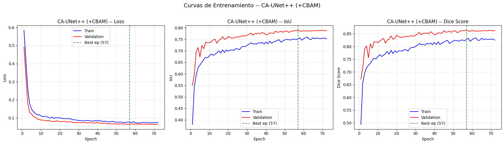
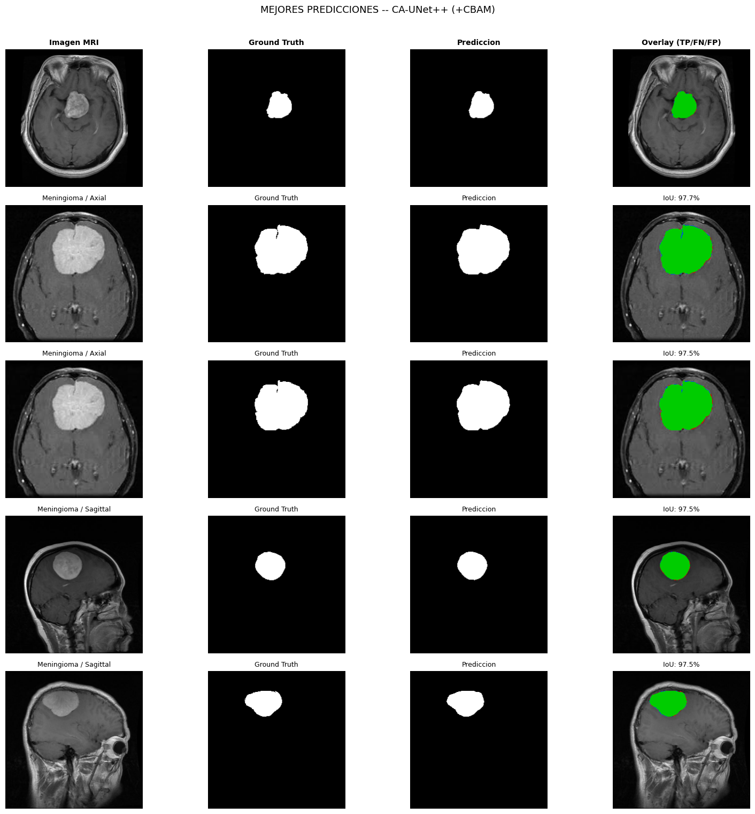
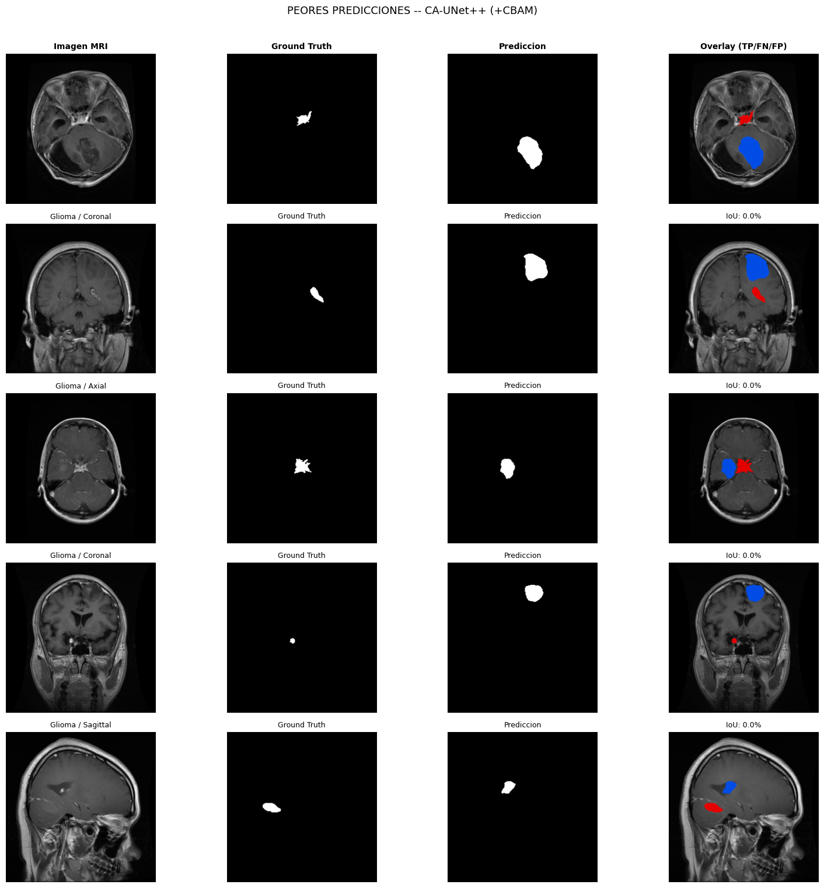
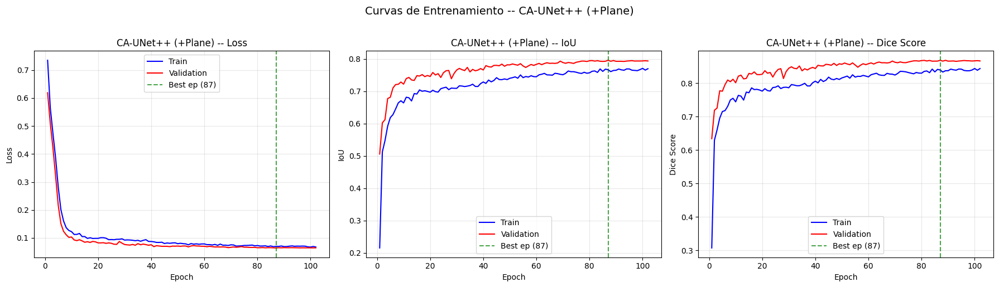
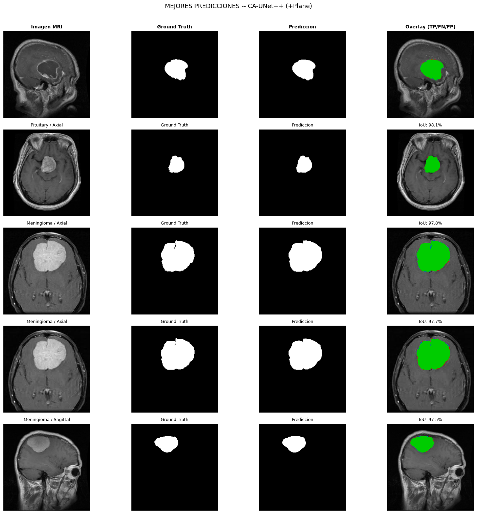
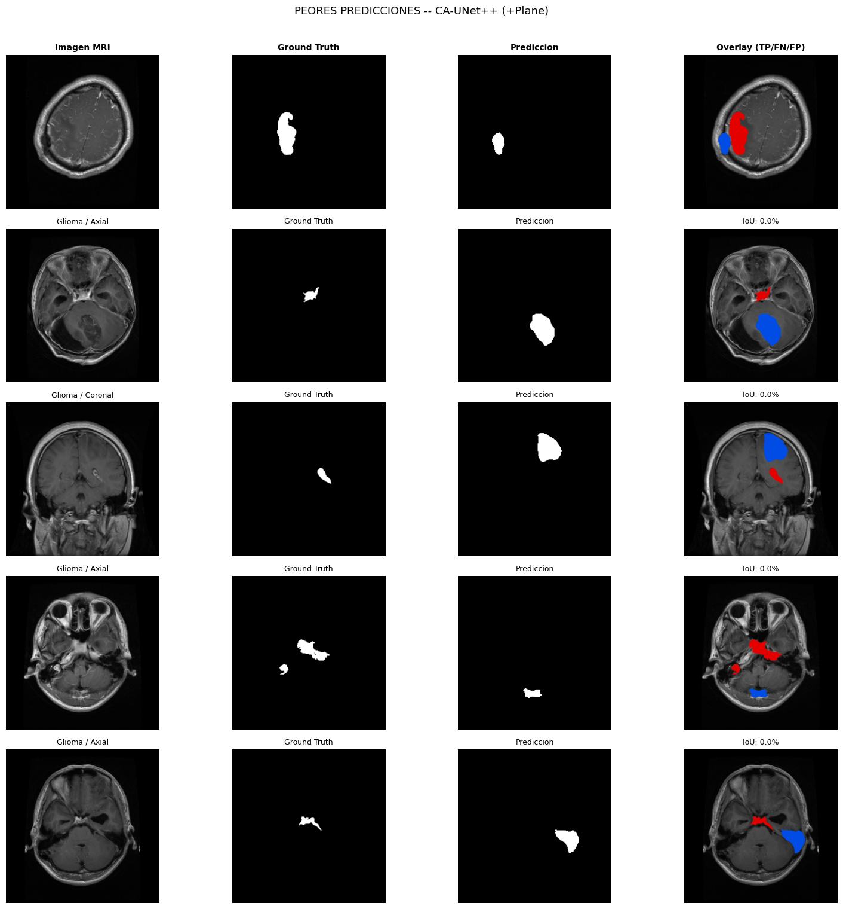
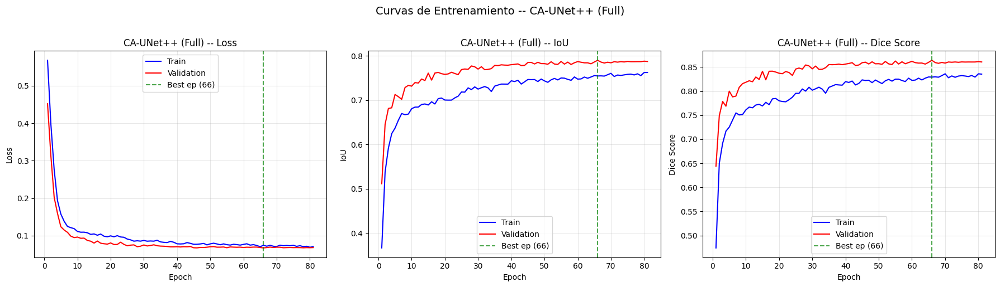
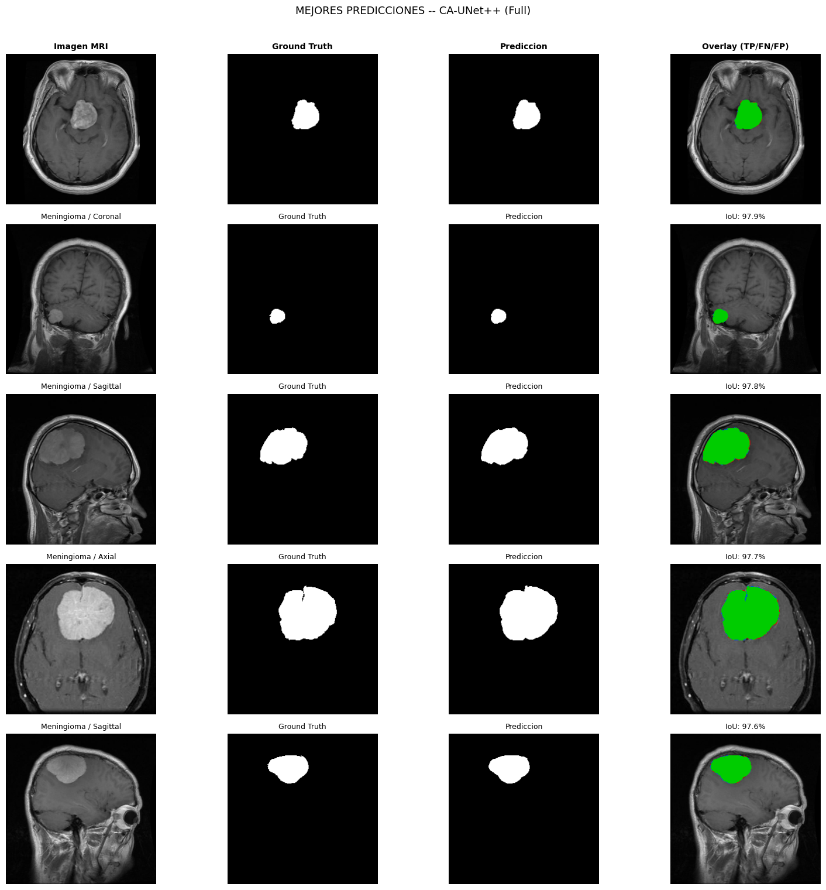
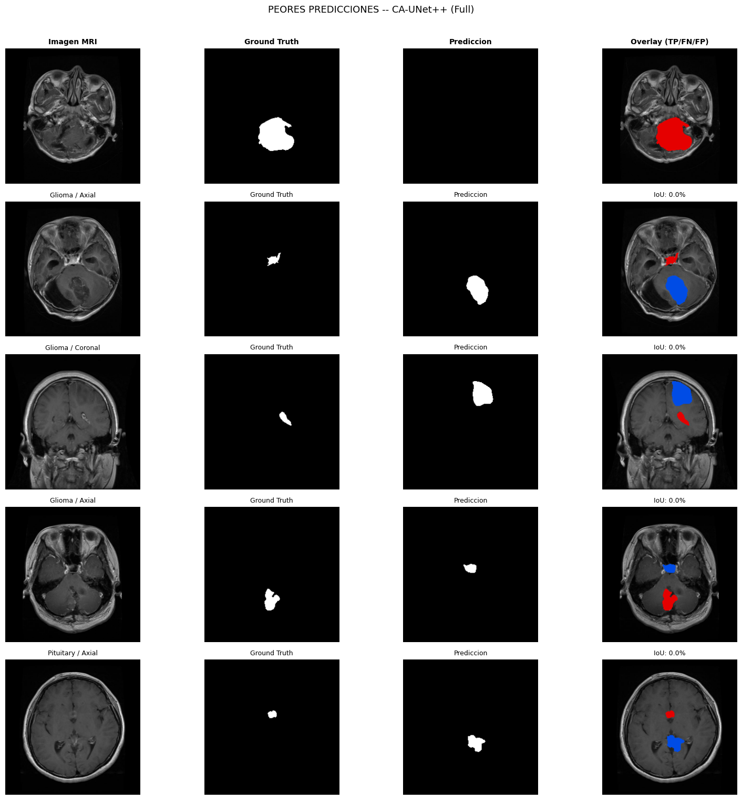
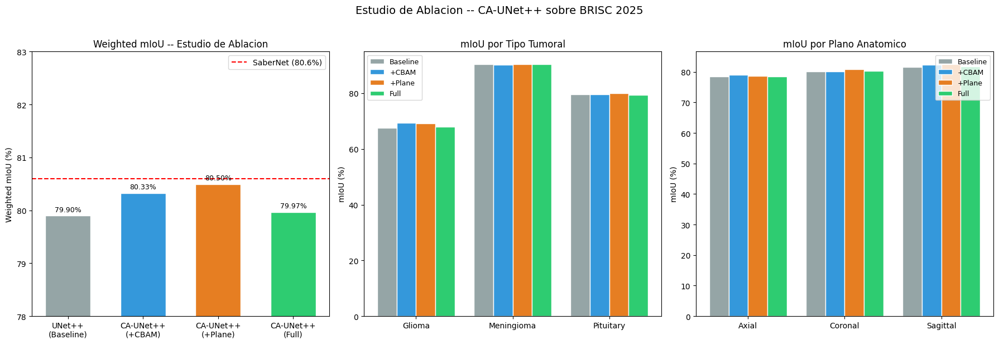

6. Modelo Propuesto: CA-UNet++ con Plane Conditioning#
Motivacion#
El analisis de benchmarks de la Fase 5 identifico con precision empirica tres gaps que limitan el rendimiento de las arquitecturas estandar sobre BRISC 2025:
Gap 1 – Segmentacion de Glioma: Los cinco modelos obtuvieron mIoU entre 66.6% y 68.3% para gliomas, frente al 74.0% de SaberNet (Fateh et al., 2026). Los bordes infiltrativos del glioma generan interfaces tumor-tejido sano de dificil delimitacion. Los encoders ResNet34 con skip connections planas carecen de mecanismos explicitos para suprimir el fondo dominante (~98% de pixeles) y enfocarse en las regiones de transicion borrosa.
Gap 2 – Degradacion consistente en el plano axial: El patron Sagittal > Coronal > Axial se observo de forma invariante en los cinco benchmarks, con una brecha de ~3 puntos porcentuales entre extremos. Este patron es independiente de la arquitectura y responde a propiedades intrisecas de las imagenes (mayor proporcion de fondo en el plano axial, 53.4%). Ningun modelo benchmark aprovecha la informacion del plano anatomico para adaptar su estrategia.
Gap 3 – Proximidad al umbral de referencia: El mejor benchmark (UNet++, 79.9% W-mIoU) se encuentra a solo 0.7 pp del objetivo (SaberNet, 80.6%). Se requieren mejoras precisas y bien motivadas sobre la arquitectura base, no una redesign completo.
Estrategia de diseno#
Se propone CA-UNet++ (Channel-Attention UNet++ with Plane Conditioning), que extiende UNet++ mediante dos contribuciones modulares ortogonales:
Modulos CBAM en las skip connections (Woo et al., 2018): aplican atencion secuencial de canal y espacial sobre cada skip connection, atacando directamente el Gap 1.
Plane Conditioning mediante FiLM (Perez et al., 2018): inyecta la informacion del plano anatomico como condicion sobre las features del bottleneck, atacando directamente el Gap 2.
Protocolo de ablacion#
Para cuantificar la contribucion independiente de cada modulo, se entrenan tres variantes bajo condiciones identicas. El Weighted mIoU de UNet++ (79.9%) de la Fase 5 actua como baseline sin necesidad de re-entrenamiento:
Variante |
Backbone |
CBAM |
Plane Cond. |
|---|---|---|---|
CA-UNet++ (+CBAM) |
UNet++ |
Si |
No |
CA-UNet++ (+Plane) |
UNet++ |
No |
Si |
CA-UNet++ (Full) |
UNet++ |
Si |
Si |
6.1 Configuracion del Entorno#
Se importan las mismas dependencias de la Fase 5 para garantizar consistencia experimental. El limite de epochs se incrementa de 100 a 150 para acomodar la convergencia mas lenta esperada en arquitecturas con modulos de atencion y conditioning.
# ============================================================
# 1. CONFIGURACION DEL ENTORNO
# ============================================================
import os, time, copy, json
import numpy as np
import pandas as pd
import matplotlib.pyplot as plt
import seaborn as sns
import warnings
from scipy import stats
import torch
import torch.nn as nn
import torch.nn.functional as F
import torch.optim as optim
from torch.utils.data import Dataset, DataLoader
from torch.amp import GradScaler, autocast
from PIL import Image
import albumentations as A
from albumentations.pytorch import ToTensorV2
import segmentation_models_pytorch as smp
SEED = 42
torch.manual_seed(SEED)
torch.cuda.manual_seed(SEED)
np.random.seed(SEED)
torch.backends.cudnn.deterministic = True
torch.backends.cudnn.benchmark = False
warnings.filterwarnings("ignore")
device = torch.device("cuda" if torch.cuda.is_available() else "cpu")
print("=" * 60)
print(" CONFIGURACION DEL ENTORNO -- MODELO PROPUESTO")
print("=" * 60)
print(f" PyTorch: {torch.__version__}")
print(f" SMP: {smp.__version__}")
print(f" Device: {device}")
if torch.cuda.is_available():
print(f" GPU: {torch.cuda.get_device_name(0)}")
print(f" VRAM: {torch.cuda.get_device_properties(0).total_memory / 1024**3:.1f} GB")
print(f" Seed: {SEED}")
print("=" * 60)
============================================================
CONFIGURACION DEL ENTORNO -- MODELO PROPUESTO
============================================================
PyTorch: 2.5.1+cu121
SMP: 0.5.0
Device: cuda
GPU: NVIDIA GeForce RTX 3050 Laptop GPU
VRAM: 4.0 GB
Seed: 42
============================================================
6.2 Carga de Datos y DataLoaders#
Se reutilizan los splits persistidos en disco durante la Fase 4 y el mismo pipeline de preprocesamiento y augmentacion. La unica diferencia respecto a la Fase 5 es que el Dataset retorna el indice numerico del plano anatomico (plane_idx) en el meta-diccionario, necesario para el modulo de Plane Conditioning: Axial=0, Coronal=1, Sagittal=2.
# ============================================================
# 2. CARGA DE DATOS Y DATALOADERS
# ============================================================
base_path = r"C:\Users\johan\Downloads\Proyectos academicos\imagenes_tumores_cerebrales\brisc2025"
IMG_SIZE = 256
BATCH_SIZE = 16
NUM_WORKERS = 0
PIN_MEMORY = True
PLANE_TO_IDX = {"Axial": 0, "Coronal": 1, "Sagittal": 2}
df_train = pd.read_csv(os.path.join(base_path, "split_train.csv"))
df_val = pd.read_csv(os.path.join(base_path, "split_val.csv"))
df_test = pd.read_csv(os.path.join(base_path, "split_test.csv"))
print(f"Splits: Train={len(df_train)} | Val={len(df_val)} | Test={len(df_test)}")
class BRISCSegDataset(Dataset):
"""
Dataset BRISC 2025 extendido con plane_idx para conditioning.
Retorna (image, mask, meta) donde meta["plane_idx"] es el
indice entero del plano: Axial=0, Coronal=1, Sagittal=2.
"""
def __init__(self, dataframe, transforms=None):
self.df = dataframe.reset_index(drop=True)
self.transforms = transforms
def __len__(self):
return len(self.df)
def __getitem__(self, idx):
row = self.df.iloc[idx]
image = np.array(
Image.open(row["image_path"]).convert("L"), dtype=np.float32
) / 255.0
mask = np.array(
Image.open(row["mask_path"]).convert("L"), dtype=np.float32
) / 255.0
mask = (mask > 0.5).astype(np.float32)
if self.transforms:
t = self.transforms(image=image, mask=mask)
image = t["image"]
mask = t["mask"]
else:
image = torch.from_numpy(image)
mask = torch.from_numpy(mask)
if image.ndim == 2: image = image.unsqueeze(0)
if mask.ndim == 2: mask = mask.unsqueeze(0)
meta = {
"filename": row["filename"],
"tumor_label": row["tumor_label"],
"plane_label": row["plane_label"],
"plane_idx": torch.tensor(
PLANE_TO_IDX.get(row["plane_label"], 0), dtype=torch.long),
}
return image, mask, meta
train_transforms = A.Compose([
A.Resize(IMG_SIZE, IMG_SIZE),
A.HorizontalFlip(p=0.5),
A.VerticalFlip(p=0.3),
A.RandomRotate90(p=0.3),
A.ShiftScaleRotate(shift_limit=0.05, scale_limit=0.1,
rotate_limit=15, border_mode=0, p=0.4),
A.ElasticTransform(alpha=50, sigma=10, border_mode=0, p=0.2),
A.RandomBrightnessContrast(brightness_limit=0.15,
contrast_limit=0.15, p=0.4),
A.GaussNoise(var_limit=(5.0, 25.0), p=0.3),
A.GaussianBlur(blur_limit=(3, 5), p=0.2),
ToTensorV2(),
])
val_test_transforms = A.Compose([
A.Resize(IMG_SIZE, IMG_SIZE),
ToTensorV2(),
])
train_dataset = BRISCSegDataset(df_train, transforms=train_transforms)
val_dataset = BRISCSegDataset(df_val, transforms=val_test_transforms)
test_dataset = BRISCSegDataset(df_test, transforms=val_test_transforms)
train_loader = DataLoader(train_dataset, batch_size=BATCH_SIZE, shuffle=True,
num_workers=NUM_WORKERS, pin_memory=PIN_MEMORY, drop_last=True)
val_loader = DataLoader(val_dataset, batch_size=BATCH_SIZE, shuffle=False,
num_workers=NUM_WORKERS, pin_memory=PIN_MEMORY)
test_loader = DataLoader(test_dataset, batch_size=BATCH_SIZE, shuffle=False,
num_workers=NUM_WORKERS, pin_memory=PIN_MEMORY)
print(f"DataLoaders: Train={len(train_loader)} batches | "
f"Val={len(val_loader)} | Test={len(test_loader)}")
print(f"Plane conditioning indices: {PLANE_TO_IDX}")
Splits: Train=3146 | Val=787 | Test=860
DataLoaders: Train=196 batches | Val=50 | Test=54
Plane conditioning indices: {'Axial': 0, 'Coronal': 1, 'Sagittal': 2}
6.3 Funciones de Perdida y Metricas#
Se mantienen identicas la ComboLoss (alpha=0.5 Dice + 0.5 BCE) y las funciones de calculo de IoU y Dice de la Fase 5. Esta consistencia es requisito metodologico: cualquier diferencia de rendimiento observada es atribuible exclusivamente a la arquitectura.
# ============================================================
# 3. FUNCIONES DE PERDIDA Y METRICAS (identicas a Fase 5)
# ============================================================
class DiceLoss(nn.Module):
def __init__(self, smooth=1.0):
super().__init__()
self.smooth = smooth
def forward(self, pred, target):
pred = torch.sigmoid(pred)
p, t = pred.view(-1), target.view(-1)
inter = (p * t).sum()
return 1.0 - (2. * inter + self.smooth) / (p.sum() + t.sum() + self.smooth)
class ComboLoss(nn.Module):
def __init__(self, alpha=0.5, smooth=1.0):
super().__init__()
self.alpha = alpha
self.dice = DiceLoss(smooth=smooth)
self.bce = nn.BCEWithLogitsLoss()
def forward(self, pred, target):
return self.alpha * self.dice(pred, target) + (1 - self.alpha) * self.bce(pred, target)
def compute_iou(pred, target, threshold=0.5, smooth=1e-6):
p = (torch.sigmoid(pred) > threshold).float()
inter = (p * target).sum(dim=(1, 2, 3))
union = p.sum(dim=(1, 2, 3)) + target.sum(dim=(1, 2, 3)) - inter
return (inter + smooth) / (union + smooth)
def compute_dice(pred, target, threshold=0.5, smooth=1e-6):
p = (torch.sigmoid(pred) > threshold).float()
inter = (p * target).sum(dim=(1, 2, 3))
return (2. * inter + smooth) / (p.sum(dim=(1,2,3)) + target.sum(dim=(1,2,3)) + smooth)
print("ComboLoss, compute_iou, compute_dice definidas (identicas a Fase 5).")
ComboLoss, compute_iou, compute_dice definidas (identicas a Fase 5).
6.4 Arquitectura del Modelo Propuesto: CA-UNet++#
6.4.1 Modulo CBAM (Convolutional Block Attention Module)#
El CBAM (Woo et al., 2018) aplica dos sub-modulos secuenciales sobre un tensor F de features:
Atencion de canal M_c: aprende que canales son relevantes combinando pooling global promedio y maximo a traves de una MLP compartida:
M_c(F) = sigmoid( MLP(AvgPool(F)) + MLP(MaxPool(F)) )
Atencion espacial M_s: aprende donde son relevantes las features sobre la representacion ya refinada por M_c:
M_s(F') = sigmoid( conv7x7( [AvgPool(F'); MaxPool(F')] ) )
La salida es F’’ = M_s * (M_c * F). En CA-UNet++, los CBAM se aplican sobre cada skip connection antes de que el decoder las reciba, permitiendo suprimir el fondo dominante (~98% de pixeles) y enfocarse en las transiciones borrosas del glioma.
6.4.2 Modulo de Plane Conditioning (FiLM)#
El mecanismo FiLM (Perez et al., 2018) condiciona las features sobre una variable auxiliar – el plano anatomico – mediante una transformacion afin aprendida:
FiLM(F | p) = (1 + gamma(p)) * F + beta(p)
donde gamma(p) y beta(p) son vectores generados por una red auxiliar a partir del embedding del plano p in {Axial, Coronal, Sagittal}. Se aplica en el bottleneck (512 canales).
6.4.3 Integracion en UNet++#
Ambos modulos son controlados por flags booleanos use_cbam y use_plane, lo que permite generar las tres variantes de ablacion desde un unico modulo.
# ============================================================
# 4. ARQUITECTURA CA-UNet++
# ============================================================
class ChannelAttention(nn.Module):
"""Atencion de canal: que features importan."""
def __init__(self, in_ch, r=16):
super().__init__()
mid = max(in_ch // r, 8)
self.mlp = nn.Sequential(
nn.Flatten(),
nn.Linear(in_ch, mid), nn.ReLU(inplace=True),
nn.Linear(mid, in_ch),
)
def forward(self, x):
avg = self.mlp(F.adaptive_avg_pool2d(x, 1))
mx = self.mlp(F.adaptive_max_pool2d(x, 1))
return torch.sigmoid(avg + mx).unsqueeze(-1).unsqueeze(-1)
class SpatialAttention(nn.Module):
"""Atencion espacial: donde importan las features."""
def __init__(self, k=7):
super().__init__()
self.conv = nn.Conv2d(2, 1, kernel_size=k, padding=k//2, bias=False)
def forward(self, x):
avg = x.mean(dim=1, keepdim=True)
mx = x.max(dim=1, keepdim=True).values
return torch.sigmoid(self.conv(torch.cat([avg, mx], dim=1)))
class CBAM(nn.Module):
"""Convolutional Block Attention Module (Woo et al., 2018)."""
def __init__(self, in_ch, r=16, k=7):
super().__init__()
self.ca = ChannelAttention(in_ch, r)
self.sa = SpatialAttention(k)
def forward(self, x):
x = x * self.ca(x)
x = x * self.sa(x)
return x
class PlaneConditioningFiLM(nn.Module):
"""Feature-wise Linear Modulation condicionado en el plano anatomico.
FiLM(F|p) = (1 + gamma(p)) * F + beta(p)
"""
def __init__(self, num_planes=3, feature_dim=512, embed_dim=64):
super().__init__()
self.emb = nn.Embedding(num_planes, embed_dim)
self.gamma_net = nn.Sequential(
nn.Linear(embed_dim, feature_dim), nn.ReLU(inplace=True),
nn.Linear(feature_dim, feature_dim),
)
self.beta_net = nn.Sequential(
nn.Linear(embed_dim, feature_dim), nn.ReLU(inplace=True),
nn.Linear(feature_dim, feature_dim),
)
def forward(self, x, plane_idx):
e = self.emb(plane_idx)
gamma = self.gamma_net(e).unsqueeze(-1).unsqueeze(-1)
beta = self.beta_net(e).unsqueeze(-1).unsqueeze(-1)
return (1 + gamma) * x + beta
class CAUNetPlusPlus(nn.Module):
"""CA-UNet++: UNet++ + CBAM en skip connections
+ Plane Conditioning (FiLM) en el bottleneck.
Flags use_cbam y use_plane controlan las variantes de ablacion.
"""
ENCODER_CHANNELS = [64, 64, 128, 256, 512]
def __init__(self, in_channels=1, classes=1,
encoder_name="resnet34",
use_cbam=True, use_plane=True,
num_planes=3):
super().__init__()
self.use_cbam = use_cbam
self.use_plane = use_plane
self.backbone = smp.UnetPlusPlus(
encoder_name = encoder_name,
encoder_weights = "imagenet",
in_channels = in_channels,
classes = classes,
activation = None,
)
if self.use_cbam:
self.cbam_blocks = nn.ModuleList([
CBAM(ch) for ch in self.ENCODER_CHANNELS])
if self.use_plane:
self.plane_film = PlaneConditioningFiLM(
num_planes=num_planes, feature_dim=512, embed_dim=64)
def _apply_cbam(self, features):
out = [features[0]]
for i, feat in enumerate(features[1:]):
out.append(self.cbam_blocks[i](feat) if i < len(self.cbam_blocks) else feat)
return out
def forward(self, x, plane_idx=None):
features = self.backbone.encoder(x)
if self.use_cbam:
features = self._apply_cbam(features)
if self.use_plane and plane_idx is not None:
fl = list(features)
fl[-1] = self.plane_film(fl[-1], plane_idx)
features = fl
dec = self.backbone.decoder(features)
logits = self.backbone.segmentation_head(dec)
return logits
print("Arquitectura CA-UNet++ definida.")
print(" Backbone: UNet++ + ResNet34 (ImageNet)")
print(" CBAM: 5 modulos sobre skip connections")
print(" Plane FiLM: embedding 3->64->512, bottleneck")
Arquitectura CA-UNet++ definida.
Backbone: UNet++ + ResNet34 (ImageNet)
CBAM: 5 modulos sobre skip connections
Plane FiLM: embedding 3->64->512, bottleneck
6.5 Verificacion de la Arquitectura#
Se verifica que las tres variantes se construyen correctamente, que el overhead de parametros de CBAM y FiLM es menor al 5% respecto al backbone, y que el forward pass produce tensores (B,1,H,W) en todos los casos.
# ============================================================
# 5. VERIFICACION DE LA ARQUITECTURA
# ============================================================
def count_params(model):
total = sum(p.numel() for p in model.parameters())
trainable = sum(p.numel() for p in model.parameters() if p.requires_grad)
return total, trainable
variants_check = {
"UNet++ (Baseline, ref)": CAUNetPlusPlus(use_cbam=False, use_plane=False),
"CA-UNet++ (+CBAM)": CAUNetPlusPlus(use_cbam=True, use_plane=False),
"CA-UNet++ (+Plane)": CAUNetPlusPlus(use_cbam=False, use_plane=True),
"CA-UNet++ (Full)": CAUNetPlusPlus(use_cbam=True, use_plane=True),
}
print("=" * 72)
print(" VERIFICACION DE ARQUITECTURAS")
print("=" * 72)
print(f" {'Variante':<28} {'Params':>14} {'Trainable':>14} {'Overhead':>10}")
print(" " + "-" * 70)
base_p = None
for name, model in variants_check.items():
total, train_p = count_params(model)
if base_p is None:
base_p = total
overhead = "baseline"
else:
overhead = f"+{(total - base_p) / base_p * 100:.1f}%"
print(f" {name:<28} {total:>14,} {train_p:>14,} {overhead:>10}")
print("\n Test forward pass:")
dummy_img = torch.zeros(2, 1, 256, 256)
dummy_pl = torch.tensor([0, 2], dtype=torch.long)
for name, model in variants_check.items():
model.eval()
with torch.no_grad():
out = model(dummy_img, plane_idx=dummy_pl) if model.use_plane else model(dummy_img)
ok = "OK" if out.shape == (2, 1, 256, 256) else "ERROR"
print(f" {ok} {name:<32} output: {tuple(out.shape)}")
print("\n Todas las variantes producen tensores (B, 1, 256, 256).")
========================================================================
VERIFICACION DE ARQUITECTURAS
========================================================================
Variante Params Trainable Overhead
----------------------------------------------------------------------
UNet++ (Baseline, ref) 26,072,337 26,072,337 baseline
CA-UNet++ (+CBAM) 26,118,979 26,118,979 +0.2%
CA-UNet++ (+Plane) 26,664,401 26,664,401 +2.3%
CA-UNet++ (Full) 26,711,043 26,711,043 +2.4%
Test forward pass:
OK UNet++ (Baseline, ref) output: (2, 1, 256, 256)
OK CA-UNet++ (+CBAM) output: (2, 1, 256, 256)
OK CA-UNet++ (+Plane) output: (2, 1, 256, 256)
OK CA-UNet++ (Full) output: (2, 1, 256, 256)
Todas las variantes producen tensores (B, 1, 256, 256).
6.6 Motor de Entrenamiento Adaptado#
El motor de la Fase 5 se adapta para pasar plane_idx al modelo en cada batch. Para variantes sin conditioning, el argumento se ignora internamente. El limite de epochs se incrementa a 150; el resto de hiperparametros es identico a la Fase 5.
# ============================================================
# 6. MOTOR DE ENTRENAMIENTO ADAPTADO
# ============================================================
HPARAMS = {
"max_epochs": 150,
"patience": 15,
"learning_rate": 1e-4,
"weight_decay": 1e-4,
"scheduler_patience": 5,
"scheduler_factor": 0.5,
"min_lr": 1e-7,
}
print("Hiperparametros del modelo propuesto:")
for k, v in HPARAMS.items():
note = " <- incrementado de 100" if k == "max_epochs" else ""
print(f" {k}: {v}{note}")
def train_one_epoch(model, loader, criterion, optimizer, scaler, device):
model.train()
loss_acc = iou_acc = dice_acc = nb = 0
for imgs, masks, meta in loader:
imgs, masks = imgs.to(device), masks.to(device)
pidx = meta["plane_idx"].to(device)
optimizer.zero_grad()
with torch.amp.autocast("cuda"):
out = model(imgs, plane_idx=pidx)
loss = criterion(out, masks)
scaler.scale(loss).backward()
scaler.step(optimizer)
scaler.update()
with torch.no_grad():
loss_acc += loss.item()
iou_acc += compute_iou(out, masks).mean().item()
dice_acc += compute_dice(out, masks).mean().item()
nb += 1
return {"loss": loss_acc/nb, "iou": iou_acc/nb, "dice": dice_acc/nb}
@torch.no_grad()
def evaluate(model, loader, criterion, device):
model.eval()
loss_acc = iou_acc = dice_acc = nb = 0
for imgs, masks, meta in loader:
imgs, masks = imgs.to(device), masks.to(device)
pidx = meta["plane_idx"].to(device)
with torch.amp.autocast("cuda"):
out = model(imgs, plane_idx=pidx)
loss = criterion(out, masks)
loss_acc += loss.item()
iou_acc += compute_iou(out, masks).mean().item()
dice_acc += compute_dice(out, masks).mean().item()
nb += 1
return {"loss": loss_acc/nb, "iou": iou_acc/nb, "dice": dice_acc/nb}
def train_model(model, name, train_loader, val_loader, device, hparams=HPARAMS):
print(f"\n{'='*65}")
print(f" ENTRENAMIENTO: {name}")
print(f"{'='*65}")
total_p, train_p = count_params(model)
print(f" Params totales: {total_p:>12,}")
print(f" Params trainables: {train_p:>12,}")
print(f" Tamano modelo: {total_p * 4 / 1024**2:>10.1f} MB")
model = model.to(device)
criterion = ComboLoss(alpha=0.5)
optimizer = optim.AdamW(model.parameters(),
lr=hparams["learning_rate"],
weight_decay=hparams["weight_decay"])
scheduler = optim.lr_scheduler.ReduceLROnPlateau(
optimizer, mode="max",
factor=hparams["scheduler_factor"],
patience=hparams["scheduler_patience"],
min_lr=hparams["min_lr"], verbose=False)
scaler = GradScaler("cuda")
history = {k: [] for k in [
"train_loss","train_iou","train_dice",
"val_loss", "val_iou", "val_dice", "lr"]}
best_dice = 0.0; best_state = None
pat_cnt = 0; best_ep = 0
ckpt_dir = os.path.join(base_path, "checkpoints")
results_dir = os.path.join(base_path, "results")
os.makedirs(ckpt_dir, exist_ok=True)
os.makedirs(results_dir, exist_ok=True)
t0 = time.time()
for ep in range(1, hparams["max_epochs"] + 1):
te = time.time()
trm = train_one_epoch(model, train_loader, criterion, optimizer, scaler, device)
vlm = evaluate(model, val_loader, criterion, device)
lr = optimizer.param_groups[0]["lr"]
scheduler.step(vlm["dice"])
for k in ["loss","iou","dice"]:
history[f"train_{k}"].append(trm[k])
history[f"val_{k}"].append(vlm[k])
history["lr"].append(lr)
improved = vlm["dice"] > best_dice
if improved:
best_dice = vlm["dice"]
best_state = copy.deepcopy(model.state_dict())
best_ep = ep
pat_cnt = 0
marker = " * BEST"
torch.save({"epoch": ep, "model_state_dict": best_state,
"val_dice": best_dice, "val_iou": vlm["iou"],
"use_cbam": model.use_cbam, "use_plane": model.use_plane},
os.path.join(ckpt_dir, f"{name}_best.pth"))
else:
pat_cnt += 1
marker = f" (pat: {pat_cnt}/{hparams['patience']})"
print(f" Ep {ep:3d}/{hparams['max_epochs']} | "
f"Tr Loss:{trm['loss']:.4f} IoU:{trm['iou']:.4f} Dice:{trm['dice']:.4f} | "
f"Vl Loss:{vlm['loss']:.4f} IoU:{vlm['iou']:.4f} Dice:{vlm['dice']:.4f} | "
f"LR:{lr:.1e} | {time.time()-te:.1f}s{marker}")
if pat_cnt >= hparams["patience"]:
print(f"\n Early Stopping en ep {ep}. "
f"Mejor: ep {best_ep} (Dice {best_dice:.4f})")
break
model.load_state_dict(best_state)
safe = name.lower().replace(" ","_").replace("+","plus").replace("(","").replace(")","_")
hist_path = os.path.join(results_dir, f"{safe}_history.json")
with open(hist_path, "w") as f: json.dump(history, f, indent=2)
print(f"\n Resumen -- {name}")
print(f" Mejor epoch: {best_ep}")
print(f" Mejor Val Dice: {best_dice:.4f}")
print(f" Val IoU: {history['val_iou'][best_ep-1]:.4f}")
print(f" Tiempo total: {(time.time()-t0)/60:.1f} min")
return model, history
print("\n Motor de entrenamiento definido.")
Hiperparametros del modelo propuesto:
max_epochs: 150 <- incrementado de 100
patience: 15
learning_rate: 0.0001
weight_decay: 0.0001
scheduler_patience: 5
scheduler_factor: 0.5
min_lr: 1e-07
Motor de entrenamiento definido.
6.7 Funciones Auxiliares: Guardado, Carga y Evaluacion Detallada#
Las funciones de guardado y carga siguen el mismo patron que en la Fase 5. La funcion de evaluacion detallada calcula metricas desagregadas por tipo tumoral y plano anatomico, generando los datos necesarios para la tabla de ablacion y el analisis de significancia estadistica.
# ============================================================
# 7. FUNCIONES AUXILIARES
# ============================================================
def safe_name(name):
return (name.lower()
.replace(" ","_").replace("+","plus")
.replace("(","").replace(")",""))
@torch.no_grad()
def evaluate_detailed(model, loader, device, model_name):
"""Evaluacion detallada con metricas por tumor y por plano.
Retorna ademas el DataFrame de resultados por imagen,
necesario para los tests estadisticos de la ablacion.
"""
model.eval()
rows = []
for imgs, masks, meta in loader:
imgs, masks = imgs.to(device), masks.to(device)
pidx = meta["plane_idx"].to(device)
with autocast(device_type="cuda"):
out = model(imgs, plane_idx=pidx)
ious = compute_iou(out, masks)
dices = compute_dice(out, masks)
for i in range(len(imgs)):
rows.append({
"filename": meta["filename"][i],
"tumor_label": meta["tumor_label"][i],
"plane_label": meta["plane_label"][i],
"iou": ious[i].item(),
"dice": dices[i].item(),
})
df = pd.DataFrame(rows)
t_iou = df.groupby("tumor_label")["iou"].mean()
t_cnt = df.groupby("tumor_label")["iou"].count()
w_miou = (t_iou * t_cnt / t_cnt.sum()).sum()
p_iou = df.groupby("plane_label")["iou"].mean()
cross = df.groupby(["tumor_label","plane_label"])["iou"].mean()
summary = {
"model_name": model_name,
"global_iou": df["iou"].mean(),
"global_dice": df["dice"].mean(),
"weighted_miou": w_miou,
"tumor_iou": t_iou.to_dict(),
"plane_iou": p_iou.to_dict(),
"cross_iou": cross.to_dict(),
"tumor_dice": df.groupby("tumor_label")["dice"].mean().to_dict(),
"plane_dice": df.groupby("plane_label")["dice"].mean().to_dict(),
}
print(f"\n{'='*60}")
print(f" RESULTADOS EN TEST -- {model_name}")
print(f"{'='*60}")
print(f" Weighted mIoU: {w_miou*100:.2f}%")
print(f" Global Dice: {df['dice'].mean()*100:.2f}%")
print("\n mIoU por Tipo Tumoral:")
for t, v in t_iou.items(): print(f" {t:<12}: {v*100:.2f}%")
print("\n mIoU por Plano Anatomico:")
for p, v in p_iou.items(): print(f" {p:<10}: {v*100:.2f}%")
return df, summary
def save_results(name, model, history, test_loader, device, base_path):
results_dir = os.path.join(base_path, "results")
os.makedirs(results_dir, exist_ok=True)
sn = safe_name(name)
df, summ = evaluate_detailed(model, test_loader, device, name)
df.to_csv(os.path.join(results_dir, f"{sn}_test_results.csv"), index=False)
summ_s = {k: ({str(kk): vv for kk,vv in v.items()} if isinstance(v, dict) else v)
for k, v in summ.items()}
with open(os.path.join(results_dir, f"{sn}_summary.json"), "w") as f:
json.dump(summ_s, f, indent=2)
print(f" Resultados de {name} guardados ({len(df)} imagenes).")
return df, summ
def already_trained(name, base_path):
sn = safe_name(name)
ckpt = os.path.join(base_path, "checkpoints", f"{name}_best.pth")
summ = os.path.join(base_path, "results", f"{sn}_summary.json")
hist = os.path.join(base_path, "results", f"{sn}_history.json")
ok = all(os.path.exists(p) for p in [ckpt, summ, hist])
if ok:
ck = torch.load(ckpt, map_location="cpu", weights_only=True)
print(f" {name} encontrado -- Val Dice: {ck['val_dice']:.4f} (ep {ck['epoch']})")
return ok
def load_results(name, base_path):
sn = safe_name(name)
rd = os.path.join(base_path, "results")
with open(os.path.join(rd, f"{sn}_history.json")) as f: hist = json.load(f)
with open(os.path.join(rd, f"{sn}_summary.json")) as f: summ = json.load(f)
df = pd.read_csv(os.path.join(rd, f"{sn}_test_results.csv"))
print(f" Cargado: {len(df)} imagenes, {len(hist['train_loss'])} epochs")
return hist, summ, df
def load_checkpoint(build_fn, name, base_path, device):
ck = torch.load(os.path.join(base_path, "checkpoints", f"{name}_best.pth"),
map_location=device, weights_only=True)
m = build_fn()
m.load_state_dict(ck["model_state_dict"])
m = m.to(device).eval()
print(f" {name} cargado (Val Dice: {ck['val_dice']:.4f})")
return m
print("Funciones auxiliares definidas.")
Funciones auxiliares definidas.
6.8 Funciones de Visualizacion#
Se definen las funciones de curvas de entrenamiento y predicciones con codigo de colores (TP verde, FN rojo, FP azul). La funcion visualize_best_worst carga cada modelo desde checkpoint para generar las predicciones mejores y peores, liberando VRAM despues de cada modelo.
# ============================================================
# 8. FUNCIONES DE VISUALIZACION
# ============================================================
def plot_curves(history, name):
"""Curvas de entrenamiento con linea del mejor epoch."""
fig, axes = plt.subplots(1, 3, figsize=(18, 5))
eps = range(1, len(history["train_loss"]) + 1)
best_e = int(np.argmax(history["val_dice"])) + 1
for ax, tr, vl, lbl in zip(
axes,
["train_loss","train_iou","train_dice"],
["val_loss", "val_iou", "val_dice"],
["Loss","IoU","Dice Score"]
):
ax.plot(eps, history[tr], "b-", label="Train", linewidth=1.5)
ax.plot(eps, history[vl], "r-", label="Validation", linewidth=1.5)
ax.axvline(best_e, color="green", ls="--", alpha=0.7,
label=f"Best ep ({best_e})")
ax.set_title(f"{name} -- {lbl}")
ax.set_xlabel("Epoch"); ax.set_ylabel(lbl)
ax.legend(); ax.grid(True, alpha=0.3)
plt.suptitle(f"Curvas de Entrenamiento -- {name}", fontsize=14, y=1.02)
plt.tight_layout()
sn = safe_name(name)
plt.savefig(f"proposed_{sn}_curves.png", dpi=150, bbox_inches="tight")
plt.show()
@torch.no_grad()
def visualize_best_worst(model, results_df, df_test_ref, device, name, n=5):
"""
Visualiza las n mejores y peores predicciones segun IoU.
Carga las imagenes desde disco usando los paths del df de test.
"""
model.eval()
rp = results_df.merge(
df_test_ref[["filename","image_path","mask_path"]], on="filename", how="left")
best = rp.nlargest(n, "iou")
worst = rp.nsmallest(n, "iou")
for subset, title in [(best, "MEJORES"), (worst, "PEORES")]:
fig, axes = plt.subplots(n, 4, figsize=(16, n * 3))
for i, (_, row) in enumerate(subset.iterrows()):
img = np.array(Image.open(row["image_path"]).convert("L"), dtype=np.float32) / 255.0
gt = np.array(Image.open(row["mask_path"]).convert("L"), dtype=np.float32) / 255.0
gt = (gt > 0.5).astype(np.float32)
# Preprocesar y predecir
t = val_test_transforms(image=img, mask=gt)
img_t = t["image"].unsqueeze(0).to(device)
pidx = torch.tensor(
[PLANE_TO_IDX.get(row["plane_label"], 0)], dtype=torch.long).to(device)
with torch.amp.autocast("cuda"):
out = model(img_t, plane_idx=pidx)
pred = (torch.sigmoid(out) > 0.5).float().cpu().squeeze().numpy()
img_np = t["image"].squeeze().numpy()
gt_np = t["mask"].squeeze().numpy()
ov = np.stack([img_np, img_np, img_np], axis=-1)
tp = (gt_np==1)&(pred==1); fn = (gt_np==1)&(pred==0); fp = (gt_np==0)&(pred==1)
ov[tp]=[0.0,0.8,0.0]; ov[fn]=[0.9,0.0,0.0]; ov[fp]=[0.0,0.3,0.9]
axes[i,0].imshow(img_np, cmap="gray")
axes[i,0].set_title(f"{row['tumor_label']} / {row['plane_label']}", fontsize=9)
axes[i,0].axis("off")
axes[i,1].imshow(gt_np, cmap="gray")
axes[i,1].set_title("Ground Truth", fontsize=9)
axes[i,1].axis("off")
axes[i,2].imshow(pred, cmap="gray")
axes[i,2].set_title("Prediccion", fontsize=9)
axes[i,2].axis("off")
axes[i,3].imshow(np.clip(ov,0,1))
axes[i,3].set_title(f"IoU: {row['iou']*100:.1f}%", fontsize=9)
axes[i,3].axis("off")
for ax, t in zip(axes[0], ["Imagen MRI","Ground Truth","Prediccion","Overlay (TP/FN/FP)"]):
ax.set_title(t, fontsize=10, fontweight="bold")
fig.suptitle(f"{title} PREDICCIONES -- {name}", fontsize=13, y=1.01)
plt.tight_layout()
sn = safe_name(name)
plt.savefig(f"proposed_{sn}_{title.lower()}.png", dpi=150, bbox_inches="tight")
plt.show()
print("Funciones de visualizacion definidas.")
Funciones de visualizacion definidas.
6.9 Entrenamiento – Variante 1: +CBAM#
El objetivo es cuantificar la contribucion aislada del mecanismo de atencion CBAM sobre el rendimiento global y, especificamente, sobre la segmentacion de gliomas.
# ============================================================
# ENTRENAMIENTO: CA-UNet++ (+CBAM)
# ============================================================
_name = "CA-UNet++ (+CBAM)"
# Corregido: usamos guiones bajos en el nombre de la función lambda
_build_ca_unetplusplus_pluscbam = lambda: CAUNetPlusPlus(use_cbam=True, use_plane=False)
if already_trained(_name, base_path):
print(f"\n {_name} ya entrenado. Cargando desde disco...")
# Corregido: nombres de variables sin '-' ni '+'
_history_ca_unetplusplus_pluscbam, _summary_ca_unetplusplus_pluscbam, _results_ca_unetplusplus_pluscbam = load_results(_name, base_path)
else:
_model = _build_ca_unetplusplus_pluscbam()
_model, _history_ca_unetplusplus_pluscbam = train_model(
_model, _name, train_loader, val_loader, device)
_results_ca_unetplusplus_pluscbam, _summary_ca_unetplusplus_pluscbam = save_results(
_name, _model, _history_ca_unetplusplus_pluscbam, test_loader, device, base_path)
del _model; torch.cuda.empty_cache()
print(f" VRAM liberada.")
# Acumular para tabla de ablacion
ablation_summaries = globals().get("ablation_summaries", {})
ablation_histories = globals().get("ablation_histories", {})
ablation_results = globals().get("ablation_results", {})
# Usamos las variables corregidas
ablation_summaries[_name] = _summary_ca_unetplusplus_pluscbam
ablation_histories[_name] = _history_ca_unetplusplus_pluscbam
ablation_results[_name] = _results_ca_unetplusplus_pluscbam
print(f"\n {_name} completado.")
=================================================================
ENTRENAMIENTO: CA-UNet++ (+CBAM)
=================================================================
Params totales: 26,118,979
Params trainables: 26,118,979
Tamano modelo: 99.6 MB
Ep 1/150 | Tr Loss:0.5846 IoU:0.3807 Dice:0.4941 | Vl Loss:0.4924 IoU:0.5500 Dice:0.6719 | LR:1.0e-04 | 116.2s * BEST
Ep 2/150 | Tr Loss:0.4207 IoU:0.5426 Dice:0.6571 | Vl Loss:0.3339 IoU:0.5996 Dice:0.7172 | LR:1.0e-04 | 105.4s * BEST
Ep 3/150 | Tr Loss:0.2640 IoU:0.5942 Dice:0.6947 | Vl Loss:0.1783 IoU:0.6962 Dice:0.7893 | LR:1.0e-04 | 105.4s * BEST
Ep 4/150 | Tr Loss:0.1793 IoU:0.6261 Dice:0.7161 | Vl Loss:0.1307 IoU:0.7141 Dice:0.8021 | LR:1.0e-04 | 104.6s * BEST
Ep 5/150 | Tr Loss:0.1491 IoU:0.6385 Dice:0.7259 | Vl Loss:0.1217 IoU:0.6735 Dice:0.7560 | LR:1.0e-04 | 104.4s (pat: 1/15)
Ep 6/150 | Tr Loss:0.1349 IoU:0.6501 Dice:0.7335 | Vl Loss:0.1074 IoU:0.7236 Dice:0.8104 | LR:1.0e-04 | 104.9s * BEST
Ep 7/150 | Tr Loss:0.1251 IoU:0.6627 Dice:0.7451 | Vl Loss:0.1037 IoU:0.7090 Dice:0.7933 | LR:1.0e-04 | 104.8s (pat: 1/15)
Ep 8/150 | Tr Loss:0.1162 IoU:0.6714 Dice:0.7540 | Vl Loss:0.0941 IoU:0.7373 Dice:0.8187 | LR:1.0e-04 | 105.6s * BEST
Ep 9/150 | Tr Loss:0.1181 IoU:0.6702 Dice:0.7511 | Vl Loss:0.0921 IoU:0.7353 Dice:0.8168 | LR:1.0e-04 | 105.6s (pat: 1/15)
Ep 10/150 | Tr Loss:0.1119 IoU:0.6783 Dice:0.7599 | Vl Loss:0.0880 IoU:0.7350 Dice:0.8158 | LR:1.0e-04 | 104.5s (pat: 2/15)
Ep 11/150 | Tr Loss:0.1061 IoU:0.6864 Dice:0.7676 | Vl Loss:0.0879 IoU:0.7391 Dice:0.8194 | LR:1.0e-04 | 105.0s * BEST
Ep 12/150 | Tr Loss:0.1092 IoU:0.6806 Dice:0.7608 | Vl Loss:0.0860 IoU:0.7474 Dice:0.8274 | LR:1.0e-04 | 105.4s * BEST
Ep 13/150 | Tr Loss:0.1064 IoU:0.6846 Dice:0.7652 | Vl Loss:0.0831 IoU:0.7501 Dice:0.8316 | LR:1.0e-04 | 104.9s * BEST
Ep 14/150 | Tr Loss:0.1028 IoU:0.6914 Dice:0.7718 | Vl Loss:0.0868 IoU:0.7327 Dice:0.8130 | LR:1.0e-04 | 104.4s (pat: 1/15)
Ep 15/150 | Tr Loss:0.0986 IoU:0.6996 Dice:0.7802 | Vl Loss:0.0819 IoU:0.7461 Dice:0.8252 | LR:1.0e-04 | 105.0s (pat: 2/15)
Ep 16/150 | Tr Loss:0.1046 IoU:0.6901 Dice:0.7696 | Vl Loss:0.0815 IoU:0.7496 Dice:0.8285 | LR:1.0e-04 | 105.0s (pat: 3/15)
Ep 17/150 | Tr Loss:0.0971 IoU:0.7036 Dice:0.7848 | Vl Loss:0.0791 IoU:0.7609 Dice:0.8416 | LR:1.0e-04 | 105.5s * BEST
Ep 18/150 | Tr Loss:0.1023 IoU:0.6929 Dice:0.7719 | Vl Loss:0.0838 IoU:0.7496 Dice:0.8281 | LR:1.0e-04 | 105.1s (pat: 1/15)
Ep 19/150 | Tr Loss:0.0994 IoU:0.7034 Dice:0.7834 | Vl Loss:0.0823 IoU:0.7530 Dice:0.8313 | LR:1.0e-04 | 104.5s (pat: 2/15)
Ep 20/150 | Tr Loss:0.1012 IoU:0.6982 Dice:0.7765 | Vl Loss:0.0795 IoU:0.7624 Dice:0.8441 | LR:1.0e-04 | 104.8s * BEST
Ep 21/150 | Tr Loss:0.0972 IoU:0.7025 Dice:0.7822 | Vl Loss:0.0809 IoU:0.7571 Dice:0.8381 | LR:1.0e-04 | 104.4s (pat: 1/15)
Ep 22/150 | Tr Loss:0.0967 IoU:0.7037 Dice:0.7825 | Vl Loss:0.0799 IoU:0.7550 Dice:0.8351 | LR:1.0e-04 | 104.7s (pat: 2/15)
Ep 23/150 | Tr Loss:0.0960 IoU:0.7023 Dice:0.7817 | Vl Loss:0.0812 IoU:0.7556 Dice:0.8368 | LR:1.0e-04 | 104.5s (pat: 3/15)
Ep 24/150 | Tr Loss:0.0954 IoU:0.7092 Dice:0.7877 | Vl Loss:0.0768 IoU:0.7594 Dice:0.8366 | LR:1.0e-04 | 105.1s (pat: 4/15)
Ep 25/150 | Tr Loss:0.0959 IoU:0.7086 Dice:0.7872 | Vl Loss:0.0790 IoU:0.7602 Dice:0.8406 | LR:1.0e-04 | 104.5s (pat: 5/15)
Ep 26/150 | Tr Loss:0.0940 IoU:0.7048 Dice:0.7809 | Vl Loss:0.0782 IoU:0.7606 Dice:0.8382 | LR:1.0e-04 | 104.4s (pat: 6/15)
Ep 27/150 | Tr Loss:0.0895 IoU:0.7166 Dice:0.7924 | Vl Loss:0.0744 IoU:0.7640 Dice:0.8404 | LR:5.0e-05 | 104.6s (pat: 7/15)
Ep 28/150 | Tr Loss:0.0899 IoU:0.7191 Dice:0.7957 | Vl Loss:0.0734 IoU:0.7658 Dice:0.8426 | LR:5.0e-05 | 104.5s (pat: 8/15)
Ep 29/150 | Tr Loss:0.0876 IoU:0.7183 Dice:0.7958 | Vl Loss:0.0734 IoU:0.7642 Dice:0.8395 | LR:5.0e-05 | 105.0s (pat: 9/15)
Ep 30/150 | Tr Loss:0.0852 IoU:0.7239 Dice:0.8005 | Vl Loss:0.0745 IoU:0.7681 Dice:0.8443 | LR:5.0e-05 | 105.3s * BEST
Ep 31/150 | Tr Loss:0.0861 IoU:0.7283 Dice:0.8047 | Vl Loss:0.0743 IoU:0.7718 Dice:0.8481 | LR:5.0e-05 | 104.5s * BEST
Ep 32/150 | Tr Loss:0.0831 IoU:0.7349 Dice:0.8118 | Vl Loss:0.0730 IoU:0.7769 Dice:0.8549 | LR:5.0e-05 | 105.0s * BEST
Ep 33/150 | Tr Loss:0.0845 IoU:0.7299 Dice:0.8062 | Vl Loss:0.0754 IoU:0.7675 Dice:0.8460 | LR:5.0e-05 | 104.9s (pat: 1/15)
Ep 34/150 | Tr Loss:0.0859 IoU:0.7307 Dice:0.8081 | Vl Loss:0.0726 IoU:0.7746 Dice:0.8512 | LR:5.0e-05 | 104.4s (pat: 2/15)
Ep 35/150 | Tr Loss:0.0849 IoU:0.7287 Dice:0.8048 | Vl Loss:0.0739 IoU:0.7736 Dice:0.8516 | LR:5.0e-05 | 105.0s (pat: 3/15)
Ep 36/150 | Tr Loss:0.0842 IoU:0.7349 Dice:0.8122 | Vl Loss:0.0734 IoU:0.7763 Dice:0.8526 | LR:5.0e-05 | 105.2s (pat: 4/15)
Ep 37/150 | Tr Loss:0.0826 IoU:0.7335 Dice:0.8090 | Vl Loss:0.0720 IoU:0.7741 Dice:0.8494 | LR:5.0e-05 | 104.9s (pat: 5/15)
Ep 38/150 | Tr Loss:0.0824 IoU:0.7365 Dice:0.8138 | Vl Loss:0.0712 IoU:0.7797 Dice:0.8578 | LR:5.0e-05 | 105.8s * BEST
Ep 39/150 | Tr Loss:0.0856 IoU:0.7291 Dice:0.8064 | Vl Loss:0.0724 IoU:0.7757 Dice:0.8518 | LR:5.0e-05 | 104.7s (pat: 1/15)
Ep 40/150 | Tr Loss:0.0827 IoU:0.7382 Dice:0.8156 | Vl Loss:0.0743 IoU:0.7691 Dice:0.8458 | LR:5.0e-05 | 104.3s (pat: 2/15)
Ep 41/150 | Tr Loss:0.0865 IoU:0.7305 Dice:0.8072 | Vl Loss:0.0721 IoU:0.7710 Dice:0.8482 | LR:5.0e-05 | 105.7s (pat: 3/15)
Ep 42/150 | Tr Loss:0.0811 IoU:0.7423 Dice:0.8182 | Vl Loss:0.0700 IoU:0.7776 Dice:0.8535 | LR:5.0e-05 | 104.5s (pat: 4/15)
Ep 43/150 | Tr Loss:0.0816 IoU:0.7323 Dice:0.8072 | Vl Loss:0.0705 IoU:0.7765 Dice:0.8518 | LR:5.0e-05 | 105.2s (pat: 5/15)
Ep 44/150 | Tr Loss:0.0820 IoU:0.7387 Dice:0.8139 | Vl Loss:0.0710 IoU:0.7755 Dice:0.8527 | LR:5.0e-05 | 105.1s (pat: 6/15)
Ep 45/150 | Tr Loss:0.0794 IoU:0.7406 Dice:0.8160 | Vl Loss:0.0673 IoU:0.7852 Dice:0.8617 | LR:2.5e-05 | 104.7s * BEST
Ep 46/150 | Tr Loss:0.0778 IoU:0.7457 Dice:0.8217 | Vl Loss:0.0684 IoU:0.7803 Dice:0.8560 | LR:2.5e-05 | 104.4s (pat: 1/15)
Ep 47/150 | Tr Loss:0.0788 IoU:0.7475 Dice:0.8235 | Vl Loss:0.0673 IoU:0.7821 Dice:0.8569 | LR:2.5e-05 | 104.9s (pat: 2/15)
Ep 48/150 | Tr Loss:0.0815 IoU:0.7375 Dice:0.8112 | Vl Loss:0.0666 IoU:0.7845 Dice:0.8597 | LR:2.5e-05 | 104.4s (pat: 3/15)
Ep 49/150 | Tr Loss:0.0777 IoU:0.7432 Dice:0.8169 | Vl Loss:0.0679 IoU:0.7803 Dice:0.8553 | LR:2.5e-05 | 104.5s (pat: 4/15)
Ep 50/150 | Tr Loss:0.0764 IoU:0.7473 Dice:0.8217 | Vl Loss:0.0665 IoU:0.7858 Dice:0.8609 | LR:2.5e-05 | 105.1s (pat: 5/15)
Ep 51/150 | Tr Loss:0.0764 IoU:0.7492 Dice:0.8239 | Vl Loss:0.0662 IoU:0.7855 Dice:0.8609 | LR:2.5e-05 | 105.6s (pat: 6/15)
Ep 52/150 | Tr Loss:0.0772 IoU:0.7481 Dice:0.8228 | Vl Loss:0.0676 IoU:0.7805 Dice:0.8544 | LR:1.3e-05 | 104.4s (pat: 7/15)
Ep 53/150 | Tr Loss:0.0765 IoU:0.7467 Dice:0.8205 | Vl Loss:0.0667 IoU:0.7832 Dice:0.8569 | LR:1.3e-05 | 104.5s (pat: 8/15)
Ep 54/150 | Tr Loss:0.0735 IoU:0.7500 Dice:0.8246 | Vl Loss:0.0660 IoU:0.7860 Dice:0.8614 | LR:1.3e-05 | 104.4s (pat: 9/15)
Ep 55/150 | Tr Loss:0.0755 IoU:0.7510 Dice:0.8251 | Vl Loss:0.0655 IoU:0.7870 Dice:0.8617 | LR:1.3e-05 | 104.7s * BEST
Ep 56/150 | Tr Loss:0.0770 IoU:0.7480 Dice:0.8221 | Vl Loss:0.0652 IoU:0.7881 Dice:0.8628 | LR:1.3e-05 | 104.8s * BEST
Ep 57/150 | Tr Loss:0.0764 IoU:0.7522 Dice:0.8280 | Vl Loss:0.0656 IoU:0.7885 Dice:0.8635 | LR:1.3e-05 | 104.7s * BEST
Ep 58/150 | Tr Loss:0.0739 IoU:0.7562 Dice:0.8316 | Vl Loss:0.0667 IoU:0.7860 Dice:0.8606 | LR:1.3e-05 | 104.7s (pat: 1/15)
Ep 59/150 | Tr Loss:0.0786 IoU:0.7458 Dice:0.8196 | Vl Loss:0.0661 IoU:0.7847 Dice:0.8593 | LR:1.3e-05 | 104.5s (pat: 2/15)
Ep 60/150 | Tr Loss:0.0741 IoU:0.7531 Dice:0.8272 | Vl Loss:0.0656 IoU:0.7872 Dice:0.8627 | LR:1.3e-05 | 104.9s (pat: 3/15)
Ep 61/150 | Tr Loss:0.0727 IoU:0.7568 Dice:0.8312 | Vl Loss:0.0662 IoU:0.7860 Dice:0.8602 | LR:1.3e-05 | 104.7s (pat: 4/15)
Ep 62/150 | Tr Loss:0.0712 IoU:0.7596 Dice:0.8336 | Vl Loss:0.0656 IoU:0.7858 Dice:0.8602 | LR:1.3e-05 | 104.7s (pat: 5/15)
Ep 63/150 | Tr Loss:0.0738 IoU:0.7500 Dice:0.8241 | Vl Loss:0.0653 IoU:0.7861 Dice:0.8602 | LR:1.3e-05 | 105.0s (pat: 6/15)
Ep 64/150 | Tr Loss:0.0747 IoU:0.7496 Dice:0.8242 | Vl Loss:0.0650 IoU:0.7864 Dice:0.8604 | LR:6.3e-06 | 105.2s (pat: 7/15)
Ep 65/150 | Tr Loss:0.0743 IoU:0.7567 Dice:0.8318 | Vl Loss:0.0650 IoU:0.7869 Dice:0.8609 | LR:6.3e-06 | 105.2s (pat: 8/15)
Ep 66/150 | Tr Loss:0.0740 IoU:0.7527 Dice:0.8280 | Vl Loss:0.0650 IoU:0.7869 Dice:0.8612 | LR:6.3e-06 | 105.0s (pat: 9/15)
Ep 67/150 | Tr Loss:0.0741 IoU:0.7557 Dice:0.8289 | Vl Loss:0.0647 IoU:0.7881 Dice:0.8624 | LR:6.3e-06 | 105.3s (pat: 10/15)
Ep 68/150 | Tr Loss:0.0723 IoU:0.7535 Dice:0.8279 | Vl Loss:0.0650 IoU:0.7867 Dice:0.8606 | LR:6.3e-06 | 105.4s (pat: 11/15)
Ep 69/150 | Tr Loss:0.0729 IoU:0.7528 Dice:0.8274 | Vl Loss:0.0641 IoU:0.7892 Dice:0.8634 | LR:6.3e-06 | 105.5s (pat: 12/15)
Ep 70/150 | Tr Loss:0.0733 IoU:0.7547 Dice:0.8285 | Vl Loss:0.0644 IoU:0.7888 Dice:0.8630 | LR:3.1e-06 | 105.5s (pat: 13/15)
Ep 71/150 | Tr Loss:0.0739 IoU:0.7553 Dice:0.8289 | Vl Loss:0.0649 IoU:0.7872 Dice:0.8611 | LR:3.1e-06 | 105.1s (pat: 14/15)
Ep 72/150 | Tr Loss:0.0756 IoU:0.7518 Dice:0.8248 | Vl Loss:0.0650 IoU:0.7879 Dice:0.8616 | LR:3.1e-06 | 105.3s (pat: 15/15)
Early Stopping en ep 72. Mejor: ep 57 (Dice 0.8635)
Resumen -- CA-UNet++ (+CBAM)
Mejor epoch: 57
Mejor Val Dice: 0.8635
Val IoU: 0.7885
Tiempo total: 126.1 min
============================================================
RESULTADOS EN TEST -- CA-UNet++ (+CBAM)
============================================================
Weighted mIoU: 80.33%
Global Dice: 87.15%
mIoU por Tipo Tumoral:
Glioma : 69.27%
Meningioma : 90.26%
Pituitary : 79.56%
mIoU por Plano Anatomico:
Axial : 79.00%
Coronal : 80.20%
Sagittal : 82.25%
Resultados de CA-UNet++ (+CBAM) guardados (860 imagenes).
VRAM liberada.
CA-UNet++ (+CBAM) completado.
6.9.1 Curvas de Entrenamiento y Predicciones: Variante 1: +CBAM#
Se visualizan las curvas de convergencia y las mejores/peores predicciones del modelo sobre el set de test, cargando el checkpoint desde disco.
# ============================================================
# VISUALIZACION: CA-UNet++ (+CBAM)
# ============================================================
# Corregido: _history_ca_unetplusplus_pluscbam
plot_curves(_history_ca_unetplusplus_pluscbam, "CA-UNet++ (+CBAM)")
print("\nCargando modelo para visualizacion de predicciones...")
# Corregido: _build_ca_unetplusplus_pluscbam
_vis_model = load_checkpoint(_build_ca_unetplusplus_pluscbam, "CA-UNet++ (+CBAM)", base_path, device)
# Corregido: _results_ca_unetplusplus_pluscbam
visualize_best_worst(
_vis_model, _results_ca_unetplusplus_pluscbam, df_test, device, "CA-UNet++ (+CBAM)", n=5)
del _vis_model; torch.cuda.empty_cache()
print("VRAM liberada.")

Cargando modelo para visualizacion de predicciones...
CA-UNet++ (+CBAM) cargado (Val Dice: 0.8635)


VRAM liberada.
6.10 Entrenamiento – Variante 2: +Plane Conditioning#
El objetivo es cuantificar si el Plane Conditioning (FiLM) reduce la brecha de rendimiento entre planos anatomicos sin modificar las skip connections.
# ============================================================
# ENTRENAMIENTO: CA-UNet++ (+Plane)
# ============================================================
_name = "CA-UNet++ (+Plane)"
# Corregido: _build_ca_unetplusplus_plusplane
_build_ca_unetplusplus_plusplane = lambda: CAUNetPlusPlus(use_cbam=False, use_plane=True)
if already_trained(_name, base_path):
print(f"\n {_name} ya entrenado. Cargando desde disco...")
# Corregido: nombres de variables con guiones bajos
_history_ca_unetplusplus_plusplane, _summary_ca_unetplusplus_plusplane, _results_ca_unetplusplus_plusplane = load_results(_name, base_path)
else:
_model = _build_ca_unetplusplus_plusplane()
_model, _history_ca_unetplusplus_plusplane = train_model(
_model, _name, train_loader, val_loader, device)
_results_ca_unetplusplus_plusplane, _summary_ca_unetplusplus_plusplane = save_results(
_name, _model, _history_ca_unetplusplus_plusplane, test_loader, device, base_path)
del _model; torch.cuda.empty_cache()
print(f" VRAM liberada.")
# Acumular para tabla de ablacion
ablation_summaries = globals().get("ablation_summaries", {})
ablation_histories = globals().get("ablation_histories", {})
ablation_results = globals().get("ablation_results", {})
# Corregido: asignación a los diccionarios usando las nuevas variables
ablation_summaries[_name] = _summary_ca_unetplusplus_plusplane
ablation_histories[_name] = _history_ca_unetplusplus_plusplane
ablation_results[_name] = _results_ca_unetplusplus_plusplane
print(f"\n {_name} completado.")
=================================================================
ENTRENAMIENTO: CA-UNet++ (+Plane)
=================================================================
Params totales: 26,664,401
Params trainables: 26,664,401
Tamano modelo: 101.7 MB
Ep 1/150 | Tr Loss:0.7349 IoU:0.2154 Dice:0.3071 | Vl Loss:0.6189 IoU:0.5058 Dice:0.6338 | LR:1.0e-04 | 101.2s * BEST
Ep 2/150 | Tr Loss:0.5659 IoU:0.5123 Dice:0.6290 | Vl Loss:0.5096 IoU:0.6020 Dice:0.7187 | LR:1.0e-04 | 99.4s * BEST
Ep 3/150 | Tr Loss:0.4742 IoU:0.5473 Dice:0.6601 | Vl Loss:0.4221 IoU:0.6123 Dice:0.7254 | LR:1.0e-04 | 99.2s * BEST
Ep 4/150 | Tr Loss:0.3870 IoU:0.5918 Dice:0.6952 | Vl Loss:0.3222 IoU:0.6772 Dice:0.7771 | LR:1.0e-04 | 99.0s * BEST
Ep 5/150 | Tr Loss:0.2820 IoU:0.6186 Dice:0.7150 | Vl Loss:0.2167 IoU:0.6815 Dice:0.7757 | LR:1.0e-04 | 99.4s (pat: 1/15)
Ep 6/150 | Tr Loss:0.2012 IoU:0.6276 Dice:0.7178 | Vl Loss:0.1510 IoU:0.7101 Dice:0.7956 | LR:1.0e-04 | 99.5s * BEST
Ep 7/150 | Tr Loss:0.1605 IoU:0.6452 Dice:0.7306 | Vl Loss:0.1235 IoU:0.7206 Dice:0.8093 | LR:1.0e-04 | 98.4s * BEST
Ep 8/150 | Tr Loss:0.1365 IoU:0.6638 Dice:0.7496 | Vl Loss:0.1112 IoU:0.7214 Dice:0.8042 | LR:1.0e-04 | 98.3s (pat: 1/15)
Ep 9/150 | Tr Loss:0.1266 IoU:0.6704 Dice:0.7546 | Vl Loss:0.1020 IoU:0.7284 Dice:0.8116 | LR:1.0e-04 | 98.7s * BEST
Ep 10/150 | Tr Loss:0.1224 IoU:0.6639 Dice:0.7440 | Vl Loss:0.1033 IoU:0.7220 Dice:0.8012 | LR:1.0e-04 | 98.8s (pat: 1/15)
Ep 11/150 | Tr Loss:0.1122 IoU:0.6814 Dice:0.7633 | Vl Loss:0.0927 IoU:0.7392 Dice:0.8207 | LR:1.0e-04 | 98.5s * BEST
Ep 12/150 | Tr Loss:0.1126 IoU:0.6798 Dice:0.7610 | Vl Loss:0.0903 IoU:0.7427 Dice:0.8238 | LR:1.0e-04 | 99.3s * BEST
Ep 13/150 | Tr Loss:0.1159 IoU:0.6699 Dice:0.7492 | Vl Loss:0.0936 IoU:0.7348 Dice:0.8127 | LR:1.0e-04 | 98.4s (pat: 1/15)
Ep 14/150 | Tr Loss:0.1048 IoU:0.6927 Dice:0.7731 | Vl Loss:0.0893 IoU:0.7334 Dice:0.8140 | LR:1.0e-04 | 98.6s (pat: 2/15)
Ep 15/150 | Tr Loss:0.1048 IoU:0.6913 Dice:0.7712 | Vl Loss:0.0844 IoU:0.7481 Dice:0.8290 | LR:1.0e-04 | 98.7s * BEST
Ep 16/150 | Tr Loss:0.0982 IoU:0.7040 Dice:0.7857 | Vl Loss:0.0864 IoU:0.7469 Dice:0.8273 | LR:1.0e-04 | 98.6s (pat: 1/15)
Ep 17/150 | Tr Loss:0.1006 IoU:0.7000 Dice:0.7807 | Vl Loss:0.0839 IoU:0.7514 Dice:0.8335 | LR:1.0e-04 | 99.6s * BEST
Ep 18/150 | Tr Loss:0.0980 IoU:0.7015 Dice:0.7814 | Vl Loss:0.0874 IoU:0.7451 Dice:0.8256 | LR:1.0e-04 | 106.6s (pat: 1/15)
Ep 19/150 | Tr Loss:0.0984 IoU:0.6994 Dice:0.7794 | Vl Loss:0.0860 IoU:0.7487 Dice:0.8253 | LR:1.0e-04 | 100.5s (pat: 2/15)
Ep 20/150 | Tr Loss:0.0984 IoU:0.6971 Dice:0.7761 | Vl Loss:0.0822 IoU:0.7456 Dice:0.8266 | LR:1.0e-04 | 98.0s (pat: 3/15)
Ep 21/150 | Tr Loss:0.1008 IoU:0.7030 Dice:0.7832 | Vl Loss:0.0822 IoU:0.7579 Dice:0.8371 | LR:1.0e-04 | 98.3s * BEST
Ep 22/150 | Tr Loss:0.1008 IoU:0.6987 Dice:0.7776 | Vl Loss:0.0829 IoU:0.7502 Dice:0.8296 | LR:1.0e-04 | 98.6s (pat: 1/15)
Ep 23/150 | Tr Loss:0.0989 IoU:0.6973 Dice:0.7762 | Vl Loss:0.0805 IoU:0.7543 Dice:0.8318 | LR:1.0e-04 | 98.8s (pat: 2/15)
Ep 24/150 | Tr Loss:0.0936 IoU:0.7077 Dice:0.7868 | Vl Loss:0.0822 IoU:0.7425 Dice:0.8180 | LR:1.0e-04 | 99.3s (pat: 3/15)
Ep 25/150 | Tr Loss:0.0940 IoU:0.7104 Dice:0.7878 | Vl Loss:0.0807 IoU:0.7571 Dice:0.8321 | LR:1.0e-04 | 98.4s (pat: 4/15)
Ep 26/150 | Tr Loss:0.0935 IoU:0.7124 Dice:0.7918 | Vl Loss:0.0775 IoU:0.7633 Dice:0.8409 | LR:1.0e-04 | 98.7s * BEST
Ep 27/150 | Tr Loss:0.0949 IoU:0.7049 Dice:0.7837 | Vl Loss:0.0769 IoU:0.7642 Dice:0.8432 | LR:1.0e-04 | 98.5s * BEST
Ep 28/150 | Tr Loss:0.0950 IoU:0.7097 Dice:0.7873 | Vl Loss:0.0872 IoU:0.7386 Dice:0.8137 | LR:1.0e-04 | 98.3s (pat: 1/15)
Ep 29/150 | Tr Loss:0.0966 IoU:0.7090 Dice:0.7877 | Vl Loss:0.0813 IoU:0.7548 Dice:0.8345 | LR:1.0e-04 | 98.4s (pat: 2/15)
Ep 30/150 | Tr Loss:0.0922 IoU:0.7089 Dice:0.7861 | Vl Loss:0.0763 IoU:0.7656 Dice:0.8444 | LR:1.0e-04 | 99.1s * BEST
Ep 31/150 | Tr Loss:0.0929 IoU:0.7167 Dice:0.7955 | Vl Loss:0.0752 IoU:0.7705 Dice:0.8487 | LR:1.0e-04 | 98.8s * BEST
Ep 32/150 | Tr Loss:0.0925 IoU:0.7160 Dice:0.7942 | Vl Loss:0.0744 IoU:0.7667 Dice:0.8443 | LR:1.0e-04 | 98.1s (pat: 1/15)
Ep 33/150 | Tr Loss:0.0916 IoU:0.7144 Dice:0.7922 | Vl Loss:0.0767 IoU:0.7638 Dice:0.8430 | LR:1.0e-04 | 98.4s (pat: 2/15)
Ep 34/150 | Tr Loss:0.0899 IoU:0.7158 Dice:0.7922 | Vl Loss:0.0738 IoU:0.7736 Dice:0.8512 | LR:1.0e-04 | 98.6s * BEST
Ep 35/150 | Tr Loss:0.0914 IoU:0.7176 Dice:0.7952 | Vl Loss:0.0795 IoU:0.7597 Dice:0.8368 | LR:1.0e-04 | 100.5s (pat: 1/15)
Ep 36/150 | Tr Loss:0.0880 IoU:0.7217 Dice:0.7994 | Vl Loss:0.0756 IoU:0.7675 Dice:0.8430 | LR:1.0e-04 | 98.9s (pat: 2/15)
Ep 37/150 | Tr Loss:0.0914 IoU:0.7148 Dice:0.7915 | Vl Loss:0.0779 IoU:0.7632 Dice:0.8394 | LR:1.0e-04 | 99.1s (pat: 3/15)
Ep 38/150 | Tr Loss:0.0937 IoU:0.7146 Dice:0.7915 | Vl Loss:0.0760 IoU:0.7653 Dice:0.8441 | LR:1.0e-04 | 99.9s (pat: 4/15)
Ep 39/150 | Tr Loss:0.0875 IoU:0.7236 Dice:0.8010 | Vl Loss:0.0738 IoU:0.7700 Dice:0.8470 | LR:1.0e-04 | 99.4s (pat: 5/15)
Ep 40/150 | Tr Loss:0.0872 IoU:0.7286 Dice:0.8057 | Vl Loss:0.0756 IoU:0.7657 Dice:0.8436 | LR:1.0e-04 | 99.2s (pat: 6/15)
Ep 41/150 | Tr Loss:0.0860 IoU:0.7242 Dice:0.8009 | Vl Loss:0.0688 IoU:0.7791 Dice:0.8533 | LR:5.0e-05 | 99.3s * BEST
Ep 42/150 | Tr Loss:0.0839 IoU:0.7345 Dice:0.8111 | Vl Loss:0.0721 IoU:0.7758 Dice:0.8516 | LR:5.0e-05 | 99.5s (pat: 1/15)
Ep 43/150 | Tr Loss:0.0838 IoU:0.7290 Dice:0.8047 | Vl Loss:0.0711 IoU:0.7747 Dice:0.8512 | LR:5.0e-05 | 99.0s (pat: 2/15)
Ep 44/150 | Tr Loss:0.0846 IoU:0.7332 Dice:0.8087 | Vl Loss:0.0700 IoU:0.7798 Dice:0.8563 | LR:5.0e-05 | 98.9s * BEST
Ep 45/150 | Tr Loss:0.0800 IoU:0.7419 Dice:0.8178 | Vl Loss:0.0700 IoU:0.7800 Dice:0.8553 | LR:5.0e-05 | 98.5s (pat: 1/15)
Ep 46/150 | Tr Loss:0.0819 IoU:0.7361 Dice:0.8119 | Vl Loss:0.0700 IoU:0.7787 Dice:0.8534 | LR:5.0e-05 | 99.3s (pat: 2/15)
Ep 47/150 | Tr Loss:0.0807 IoU:0.7357 Dice:0.8102 | Vl Loss:0.0688 IoU:0.7838 Dice:0.8590 | LR:5.0e-05 | 99.3s * BEST
Ep 48/150 | Tr Loss:0.0820 IoU:0.7380 Dice:0.8138 | Vl Loss:0.0707 IoU:0.7773 Dice:0.8528 | LR:5.0e-05 | 99.3s (pat: 1/15)
Ep 49/150 | Tr Loss:0.0825 IoU:0.7360 Dice:0.8109 | Vl Loss:0.0704 IoU:0.7816 Dice:0.8578 | LR:5.0e-05 | 99.1s (pat: 2/15)
Ep 50/150 | Tr Loss:0.0794 IoU:0.7401 Dice:0.8154 | Vl Loss:0.0709 IoU:0.7814 Dice:0.8563 | LR:5.0e-05 | 98.8s (pat: 3/15)
Ep 51/150 | Tr Loss:0.0808 IoU:0.7419 Dice:0.8181 | Vl Loss:0.0701 IoU:0.7843 Dice:0.8601 | LR:5.0e-05 | 99.3s * BEST
Ep 52/150 | Tr Loss:0.0795 IoU:0.7443 Dice:0.8209 | Vl Loss:0.0711 IoU:0.7822 Dice:0.8573 | LR:5.0e-05 | 99.5s (pat: 1/15)
Ep 53/150 | Tr Loss:0.0787 IoU:0.7402 Dice:0.8148 | Vl Loss:0.0711 IoU:0.7805 Dice:0.8550 | LR:5.0e-05 | 98.8s (pat: 2/15)
Ep 54/150 | Tr Loss:0.0753 IoU:0.7503 Dice:0.8248 | Vl Loss:0.0680 IoU:0.7852 Dice:0.8604 | LR:5.0e-05 | 99.1s * BEST
Ep 55/150 | Tr Loss:0.0797 IoU:0.7420 Dice:0.8180 | Vl Loss:0.0712 IoU:0.7781 Dice:0.8543 | LR:5.0e-05 | 99.2s (pat: 1/15)
Ep 56/150 | Tr Loss:0.0775 IoU:0.7455 Dice:0.8204 | Vl Loss:0.0724 IoU:0.7736 Dice:0.8475 | LR:5.0e-05 | 99.1s (pat: 2/15)
Ep 57/150 | Tr Loss:0.0788 IoU:0.7438 Dice:0.8200 | Vl Loss:0.0713 IoU:0.7783 Dice:0.8535 | LR:5.0e-05 | 98.6s (pat: 3/15)
Ep 58/150 | Tr Loss:0.0773 IoU:0.7479 Dice:0.8230 | Vl Loss:0.0709 IoU:0.7827 Dice:0.8579 | LR:5.0e-05 | 98.7s (pat: 4/15)
Ep 59/150 | Tr Loss:0.0784 IoU:0.7451 Dice:0.8210 | Vl Loss:0.0702 IoU:0.7798 Dice:0.8551 | LR:5.0e-05 | 99.0s (pat: 5/15)
Ep 60/150 | Tr Loss:0.0786 IoU:0.7448 Dice:0.8187 | Vl Loss:0.0701 IoU:0.7831 Dice:0.8580 | LR:5.0e-05 | 98.9s (pat: 6/15)
Ep 61/150 | Tr Loss:0.0759 IoU:0.7506 Dice:0.8251 | Vl Loss:0.0686 IoU:0.7860 Dice:0.8604 | LR:2.5e-05 | 99.4s (pat: 7/15)
Ep 62/150 | Tr Loss:0.0761 IoU:0.7525 Dice:0.8273 | Vl Loss:0.0700 IoU:0.7821 Dice:0.8571 | LR:2.5e-05 | 98.9s (pat: 8/15)
Ep 63/150 | Tr Loss:0.0747 IoU:0.7552 Dice:0.8296 | Vl Loss:0.0687 IoU:0.7856 Dice:0.8608 | LR:2.5e-05 | 99.0s * BEST
Ep 64/150 | Tr Loss:0.0767 IoU:0.7505 Dice:0.8248 | Vl Loss:0.0676 IoU:0.7880 Dice:0.8630 | LR:2.5e-05 | 99.9s * BEST
Ep 65/150 | Tr Loss:0.0733 IoU:0.7502 Dice:0.8233 | Vl Loss:0.0679 IoU:0.7861 Dice:0.8608 | LR:2.5e-05 | 99.9s (pat: 1/15)
Ep 66/150 | Tr Loss:0.0778 IoU:0.7495 Dice:0.8231 | Vl Loss:0.0675 IoU:0.7866 Dice:0.8610 | LR:2.5e-05 | 123.9s (pat: 2/15)
Ep 67/150 | Tr Loss:0.0738 IoU:0.7554 Dice:0.8291 | Vl Loss:0.0679 IoU:0.7861 Dice:0.8603 | LR:2.5e-05 | 125.0s (pat: 3/15)
Ep 68/150 | Tr Loss:0.0741 IoU:0.7543 Dice:0.8271 | Vl Loss:0.0673 IoU:0.7873 Dice:0.8615 | LR:2.5e-05 | 125.2s (pat: 4/15)
Ep 69/150 | Tr Loss:0.0729 IoU:0.7522 Dice:0.8267 | Vl Loss:0.0652 IoU:0.7930 Dice:0.8659 | LR:2.5e-05 | 125.5s * BEST
Ep 70/150 | Tr Loss:0.0753 IoU:0.7510 Dice:0.8241 | Vl Loss:0.0664 IoU:0.7886 Dice:0.8623 | LR:2.5e-05 | 125.5s (pat: 1/15)
Ep 71/150 | Tr Loss:0.0748 IoU:0.7552 Dice:0.8288 | Vl Loss:0.0676 IoU:0.7863 Dice:0.8609 | LR:2.5e-05 | 121.2s (pat: 2/15)
Ep 72/150 | Tr Loss:0.0707 IoU:0.7625 Dice:0.8353 | Vl Loss:0.0666 IoU:0.7888 Dice:0.8633 | LR:2.5e-05 | 98.4s (pat: 3/15)
Ep 73/150 | Tr Loss:0.0712 IoU:0.7604 Dice:0.8348 | Vl Loss:0.0675 IoU:0.7877 Dice:0.8614 | LR:2.5e-05 | 98.6s (pat: 4/15)
Ep 74/150 | Tr Loss:0.0718 IoU:0.7604 Dice:0.8338 | Vl Loss:0.0690 IoU:0.7860 Dice:0.8611 | LR:2.5e-05 | 99.0s (pat: 5/15)
Ep 75/150 | Tr Loss:0.0730 IoU:0.7587 Dice:0.8317 | Vl Loss:0.0669 IoU:0.7896 Dice:0.8630 | LR:2.5e-05 | 99.0s (pat: 6/15)
Ep 76/150 | Tr Loss:0.0731 IoU:0.7563 Dice:0.8297 | Vl Loss:0.0668 IoU:0.7911 Dice:0.8649 | LR:1.3e-05 | 98.9s (pat: 7/15)
Ep 77/150 | Tr Loss:0.0736 IoU:0.7550 Dice:0.8278 | Vl Loss:0.0661 IoU:0.7932 Dice:0.8665 | LR:1.3e-05 | 99.4s * BEST
Ep 78/150 | Tr Loss:0.0744 IoU:0.7586 Dice:0.8317 | Vl Loss:0.0660 IoU:0.7932 Dice:0.8667 | LR:1.3e-05 | 99.1s * BEST
Ep 79/150 | Tr Loss:0.0717 IoU:0.7556 Dice:0.8299 | Vl Loss:0.0662 IoU:0.7919 Dice:0.8659 | LR:1.3e-05 | 99.0s (pat: 1/15)
Ep 80/150 | Tr Loss:0.0727 IoU:0.7569 Dice:0.8297 | Vl Loss:0.0650 IoU:0.7942 Dice:0.8673 | LR:1.3e-05 | 99.4s * BEST
Ep 81/150 | Tr Loss:0.0709 IoU:0.7617 Dice:0.8351 | Vl Loss:0.0650 IoU:0.7946 Dice:0.8680 | LR:1.3e-05 | 99.2s * BEST
Ep 82/150 | Tr Loss:0.0711 IoU:0.7627 Dice:0.8363 | Vl Loss:0.0655 IoU:0.7931 Dice:0.8662 | LR:1.3e-05 | 99.0s (pat: 1/15)
Ep 83/150 | Tr Loss:0.0716 IoU:0.7581 Dice:0.8311 | Vl Loss:0.0646 IoU:0.7944 Dice:0.8678 | LR:1.3e-05 | 100.0s (pat: 2/15)
Ep 84/150 | Tr Loss:0.0693 IoU:0.7688 Dice:0.8419 | Vl Loss:0.0651 IoU:0.7928 Dice:0.8655 | LR:1.3e-05 | 99.9s (pat: 3/15)
Ep 85/150 | Tr Loss:0.0713 IoU:0.7614 Dice:0.8335 | Vl Loss:0.0651 IoU:0.7922 Dice:0.8658 | LR:1.3e-05 | 100.2s (pat: 4/15)
Ep 86/150 | Tr Loss:0.0687 IoU:0.7683 Dice:0.8411 | Vl Loss:0.0647 IoU:0.7927 Dice:0.8658 | LR:1.3e-05 | 99.9s (pat: 5/15)
Ep 87/150 | Tr Loss:0.0698 IoU:0.7664 Dice:0.8392 | Vl Loss:0.0642 IoU:0.7957 Dice:0.8683 | LR:1.3e-05 | 99.4s * BEST
Ep 88/150 | Tr Loss:0.0696 IoU:0.7607 Dice:0.8331 | Vl Loss:0.0650 IoU:0.7927 Dice:0.8658 | LR:1.3e-05 | 99.1s (pat: 1/15)
Ep 89/150 | Tr Loss:0.0711 IoU:0.7642 Dice:0.8370 | Vl Loss:0.0646 IoU:0.7948 Dice:0.8681 | LR:1.3e-05 | 98.9s (pat: 2/15)
Ep 90/150 | Tr Loss:0.0690 IoU:0.7647 Dice:0.8371 | Vl Loss:0.0653 IoU:0.7925 Dice:0.8657 | LR:1.3e-05 | 98.9s (pat: 3/15)
Ep 91/150 | Tr Loss:0.0692 IoU:0.7686 Dice:0.8418 | Vl Loss:0.0650 IoU:0.7926 Dice:0.8659 | LR:1.3e-05 | 98.9s (pat: 4/15)
Ep 92/150 | Tr Loss:0.0704 IoU:0.7661 Dice:0.8398 | Vl Loss:0.0650 IoU:0.7926 Dice:0.8663 | LR:1.3e-05 | 98.9s (pat: 5/15)
Ep 93/150 | Tr Loss:0.0715 IoU:0.7649 Dice:0.8386 | Vl Loss:0.0652 IoU:0.7921 Dice:0.8651 | LR:1.3e-05 | 99.2s (pat: 6/15)
Ep 94/150 | Tr Loss:0.0701 IoU:0.7690 Dice:0.8421 | Vl Loss:0.0650 IoU:0.7933 Dice:0.8660 | LR:6.3e-06 | 99.1s (pat: 7/15)
Ep 95/150 | Tr Loss:0.0707 IoU:0.7688 Dice:0.8417 | Vl Loss:0.0648 IoU:0.7939 Dice:0.8667 | LR:6.3e-06 | 99.2s (pat: 8/15)
Ep 96/150 | Tr Loss:0.0704 IoU:0.7650 Dice:0.8379 | Vl Loss:0.0644 IoU:0.7945 Dice:0.8676 | LR:6.3e-06 | 99.0s (pat: 9/15)
Ep 97/150 | Tr Loss:0.0709 IoU:0.7644 Dice:0.8368 | Vl Loss:0.0647 IoU:0.7933 Dice:0.8669 | LR:6.3e-06 | 98.7s (pat: 10/15)
Ep 98/150 | Tr Loss:0.0704 IoU:0.7635 Dice:0.8369 | Vl Loss:0.0645 IoU:0.7935 Dice:0.8667 | LR:6.3e-06 | 99.2s (pat: 11/15)
Ep 99/150 | Tr Loss:0.0680 IoU:0.7668 Dice:0.8392 | Vl Loss:0.0646 IoU:0.7934 Dice:0.8661 | LR:6.3e-06 | 99.1s (pat: 12/15)
Ep 100/150 | Tr Loss:0.0674 IoU:0.7706 Dice:0.8437 | Vl Loss:0.0646 IoU:0.7937 Dice:0.8666 | LR:3.1e-06 | 98.9s (pat: 13/15)
Ep 101/150 | Tr Loss:0.0695 IoU:0.7653 Dice:0.8384 | Vl Loss:0.0645 IoU:0.7942 Dice:0.8671 | LR:3.1e-06 | 99.1s (pat: 14/15)
Ep 102/150 | Tr Loss:0.0674 IoU:0.7696 Dice:0.8435 | Vl Loss:0.0646 IoU:0.7936 Dice:0.8664 | LR:3.1e-06 | 99.1s (pat: 15/15)
Early Stopping en ep 102. Mejor: ep 87 (Dice 0.8683)
Resumen -- CA-UNet++ (+Plane)
Mejor epoch: 87
Mejor Val Dice: 0.8683
Val IoU: 0.7957
Tiempo total: 171.1 min
============================================================
RESULTADOS EN TEST -- CA-UNet++ (+Plane)
============================================================
Weighted mIoU: 80.50%
Global Dice: 87.27%
mIoU por Tipo Tumoral:
Glioma : 69.12%
Meningioma : 90.34%
Pituitary : 80.09%
mIoU por Plano Anatomico:
Axial : 78.64%
Coronal : 80.95%
Sagittal : 82.53%
Resultados de CA-UNet++ (+Plane) guardados (860 imagenes).
VRAM liberada.
CA-UNet++ (+Plane) completado.
6.10.1 Curvas de Entrenamiento y Predicciones: Variante 2: +Plane Conditioning#
Se visualizan las curvas de convergencia y las mejores/peores predicciones del modelo sobre el set de test, cargando el checkpoint desde disco.
# ============================================================
# VISUALIZACION: CA-UNet++ (+Plane)
# ============================================================
# Corregido: _history_ca_unetplusplus_plusplane
plot_curves(_history_ca_unetplusplus_plusplane, "CA-UNet++ (+Plane)")
print("\nCargando modelo para visualizacion de predicciones...")
# Corregido: _build_ca_unetplusplus_plusplane
_vis_model = load_checkpoint(_build_ca_unetplusplus_plusplane, "CA-UNet++ (+Plane)", base_path, device)
# Corregido: _results_ca_unetplusplus_plusplane
visualize_best_worst(
_vis_model, _results_ca_unetplusplus_plusplane, df_test, device, "CA-UNet++ (+Plane)", n=5)
del _vis_model; torch.cuda.empty_cache()
print("VRAM liberada.")

Cargando modelo para visualizacion de predicciones...
CA-UNet++ (+Plane) cargado (Val Dice: 0.8683)


VRAM liberada.
6.11 Entrenamiento – Modelo Completo: CA-UNet++ (Full)#
El modelo completo combina CBAM y Plane Conditioning, atacando de forma simultanea el Gap 1 (glioma) y el Gap 2 (degradacion axial). Representa la propuesta final del trabajo.
# ============================================================
# ENTRENAMIENTO: CA-UNet++ (Full)
# ============================================================
_name = "CA-UNet++ (Full)"
# Corregido: _build_ca_unetplusplus_full
_build_ca_unetplusplus_full = lambda: CAUNetPlusPlus(use_cbam=True, use_plane=True)
if already_trained(_name, base_path):
print(f"\n {_name} ya entrenado. Cargando desde disco...")
# Corregido: nombres de variables con guiones bajos
_history_ca_unetplusplus_full, _summary_ca_unetplusplus_full, _results_ca_unetplusplus_full = load_results(_name, base_path)
else:
_model = _build_ca_unetplusplus_full()
_model, _history_ca_unetplusplus_full = train_model(
_model, _name, train_loader, val_loader, device)
_results_ca_unetplusplus_full, _summary_ca_unetplusplus_full = save_results(
_name, _model, _history_ca_unetplusplus_full, test_loader, device, base_path)
del _model; torch.cuda.empty_cache()
print(f" VRAM liberada.")
# Acumular para tabla de ablacion
ablation_summaries = globals().get("ablation_summaries", {})
ablation_histories = globals().get("ablation_histories", {})
ablation_results = globals().get("ablation_results", {})
# Corregido: asignación usando las nuevas variables
ablation_summaries[_name] = _summary_ca_unetplusplus_full
ablation_histories[_name] = _history_ca_unetplusplus_full
ablation_results[_name] = _results_ca_unetplusplus_full
print(f"\n {_name} completado.")
=================================================================
ENTRENAMIENTO: CA-UNet++ (Full)
=================================================================
Params totales: 26,711,043
Params trainables: 26,711,043
Tamano modelo: 101.9 MB
Ep 1/150 | Tr Loss:0.5680 IoU:0.3669 Dice:0.4741 | Vl Loss:0.4520 IoU:0.5117 Dice:0.6440 | LR:1.0e-04 | 109.1s * BEST
Ep 2/150 | Tr Loss:0.3981 IoU:0.5376 Dice:0.6502 | Vl Loss:0.3135 IoU:0.6453 Dice:0.7490 | LR:1.0e-04 | 107.0s * BEST
Ep 3/150 | Tr Loss:0.2756 IoU:0.5922 Dice:0.6914 | Vl Loss:0.2021 IoU:0.6815 Dice:0.7788 | LR:1.0e-04 | 105.2s * BEST
Ep 4/150 | Tr Loss:0.1934 IoU:0.6247 Dice:0.7170 | Vl Loss:0.1595 IoU:0.6830 Dice:0.7688 | LR:1.0e-04 | 105.1s (pat: 1/15)
Ep 5/150 | Tr Loss:0.1578 IoU:0.6372 Dice:0.7253 | Vl Loss:0.1238 IoU:0.7130 Dice:0.8001 | LR:1.0e-04 | 105.5s * BEST
Ep 6/150 | Tr Loss:0.1384 IoU:0.6548 Dice:0.7400 | Vl Loss:0.1151 IoU:0.7081 Dice:0.7882 | LR:1.0e-04 | 105.9s (pat: 1/15)
Ep 7/150 | Tr Loss:0.1246 IoU:0.6701 Dice:0.7548 | Vl Loss:0.1089 IoU:0.7021 Dice:0.7898 | LR:1.0e-04 | 104.9s (pat: 2/15)
Ep 8/150 | Tr Loss:0.1213 IoU:0.6675 Dice:0.7506 | Vl Loss:0.0988 IoU:0.7287 Dice:0.8081 | LR:1.0e-04 | 105.6s * BEST
Ep 9/150 | Tr Loss:0.1188 IoU:0.6688 Dice:0.7514 | Vl Loss:0.0949 IoU:0.7336 Dice:0.8157 | LR:1.0e-04 | 105.8s * BEST
Ep 10/150 | Tr Loss:0.1113 IoU:0.6810 Dice:0.7611 | Vl Loss:0.0962 IoU:0.7318 Dice:0.8186 | LR:1.0e-04 | 106.7s * BEST
Ep 11/150 | Tr Loss:0.1092 IoU:0.6845 Dice:0.7669 | Vl Loss:0.0930 IoU:0.7398 Dice:0.8217 | LR:1.0e-04 | 107.3s * BEST
Ep 12/150 | Tr Loss:0.1093 IoU:0.6846 Dice:0.7655 | Vl Loss:0.0934 IoU:0.7389 Dice:0.8197 | LR:1.0e-04 | 106.4s (pat: 1/15)
Ep 13/150 | Tr Loss:0.1077 IoU:0.6905 Dice:0.7712 | Vl Loss:0.0871 IoU:0.7479 Dice:0.8296 | LR:1.0e-04 | 106.3s * BEST
Ep 14/150 | Tr Loss:0.1034 IoU:0.6917 Dice:0.7726 | Vl Loss:0.0853 IoU:0.7445 Dice:0.8243 | LR:1.0e-04 | 105.3s (pat: 1/15)
Ep 15/150 | Tr Loss:0.1046 IoU:0.6893 Dice:0.7693 | Vl Loss:0.0802 IoU:0.7613 Dice:0.8414 | LR:1.0e-04 | 104.8s * BEST
Ep 16/150 | Tr Loss:0.1011 IoU:0.6966 Dice:0.7769 | Vl Loss:0.0857 IoU:0.7455 Dice:0.8236 | LR:1.0e-04 | 104.6s (pat: 1/15)
Ep 17/150 | Tr Loss:0.1043 IoU:0.6916 Dice:0.7720 | Vl Loss:0.0799 IoU:0.7614 Dice:0.8414 | LR:1.0e-04 | 104.7s * BEST
Ep 18/150 | Tr Loss:0.0985 IoU:0.7037 Dice:0.7841 | Vl Loss:0.0784 IoU:0.7628 Dice:0.8416 | LR:1.0e-04 | 105.0s * BEST
Ep 19/150 | Tr Loss:0.0970 IoU:0.7050 Dice:0.7848 | Vl Loss:0.0774 IoU:0.7599 Dice:0.8397 | LR:1.0e-04 | 105.3s (pat: 1/15)
Ep 20/150 | Tr Loss:0.0995 IoU:0.7005 Dice:0.7800 | Vl Loss:0.0805 IoU:0.7585 Dice:0.8373 | LR:1.0e-04 | 104.8s (pat: 2/15)
Ep 21/150 | Tr Loss:0.0970 IoU:0.7003 Dice:0.7786 | Vl Loss:0.0764 IoU:0.7594 Dice:0.8363 | LR:1.0e-04 | 105.1s (pat: 3/15)
Ep 22/150 | Tr Loss:0.1000 IoU:0.7004 Dice:0.7780 | Vl Loss:0.0766 IoU:0.7632 Dice:0.8409 | LR:1.0e-04 | 105.6s (pat: 4/15)
Ep 23/150 | Tr Loss:0.0965 IoU:0.7054 Dice:0.7823 | Vl Loss:0.0825 IoU:0.7603 Dice:0.8388 | LR:1.0e-04 | 104.8s (pat: 5/15)
Ep 24/150 | Tr Loss:0.0957 IoU:0.7092 Dice:0.7875 | Vl Loss:0.0768 IoU:0.7579 Dice:0.8328 | LR:1.0e-04 | 104.5s (pat: 6/15)
Ep 25/150 | Tr Loss:0.0909 IoU:0.7186 Dice:0.7955 | Vl Loss:0.0730 IoU:0.7692 Dice:0.8460 | LR:5.0e-05 | 105.2s * BEST
Ep 26/150 | Tr Loss:0.0888 IoU:0.7183 Dice:0.7955 | Vl Loss:0.0747 IoU:0.7706 Dice:0.8481 | LR:5.0e-05 | 105.0s * BEST
Ep 27/150 | Tr Loss:0.0853 IoU:0.7279 Dice:0.8046 | Vl Loss:0.0754 IoU:0.7698 Dice:0.8459 | LR:5.0e-05 | 105.2s (pat: 1/15)
Ep 28/150 | Tr Loss:0.0863 IoU:0.7241 Dice:0.8001 | Vl Loss:0.0705 IoU:0.7774 Dice:0.8546 | LR:5.0e-05 | 105.1s * BEST
Ep 29/150 | Tr Loss:0.0854 IoU:0.7301 Dice:0.8082 | Vl Loss:0.0719 IoU:0.7755 Dice:0.8525 | LR:5.0e-05 | 104.4s (pat: 1/15)
Ep 30/150 | Tr Loss:0.0871 IoU:0.7252 Dice:0.8020 | Vl Loss:0.0752 IoU:0.7703 Dice:0.8465 | LR:5.0e-05 | 104.5s (pat: 2/15)
Ep 31/150 | Tr Loss:0.0853 IoU:0.7283 Dice:0.8050 | Vl Loss:0.0725 IoU:0.7757 Dice:0.8523 | LR:5.0e-05 | 104.7s (pat: 3/15)
Ep 32/150 | Tr Loss:0.0858 IoU:0.7309 Dice:0.8083 | Vl Loss:0.0738 IoU:0.7689 Dice:0.8454 | LR:5.0e-05 | 105.9s (pat: 4/15)
Ep 33/150 | Tr Loss:0.0854 IoU:0.7280 Dice:0.8043 | Vl Loss:0.0756 IoU:0.7697 Dice:0.8456 | LR:5.0e-05 | 104.9s (pat: 5/15)
Ep 34/150 | Tr Loss:0.0877 IoU:0.7196 Dice:0.7958 | Vl Loss:0.0731 IoU:0.7714 Dice:0.8488 | LR:5.0e-05 | 105.0s (pat: 6/15)
Ep 35/150 | Tr Loss:0.0834 IoU:0.7319 Dice:0.8080 | Vl Loss:0.0722 IoU:0.7786 Dice:0.8554 | LR:2.5e-05 | 105.6s * BEST
Ep 36/150 | Tr Loss:0.0822 IoU:0.7343 Dice:0.8107 | Vl Loss:0.0718 IoU:0.7782 Dice:0.8551 | LR:2.5e-05 | 105.3s (pat: 1/15)
Ep 37/150 | Tr Loss:0.0816 IoU:0.7366 Dice:0.8137 | Vl Loss:0.0712 IoU:0.7800 Dice:0.8554 | LR:2.5e-05 | 105.3s * BEST
Ep 38/150 | Tr Loss:0.0846 IoU:0.7365 Dice:0.8130 | Vl Loss:0.0700 IoU:0.7793 Dice:0.8563 | LR:2.5e-05 | 105.1s * BEST
Ep 39/150 | Tr Loss:0.0824 IoU:0.7364 Dice:0.8125 | Vl Loss:0.0700 IoU:0.7791 Dice:0.8551 | LR:2.5e-05 | 104.8s (pat: 1/15)
Ep 40/150 | Tr Loss:0.0782 IoU:0.7439 Dice:0.8199 | Vl Loss:0.0704 IoU:0.7803 Dice:0.8563 | LR:2.5e-05 | 105.4s * BEST
Ep 41/150 | Tr Loss:0.0778 IoU:0.7423 Dice:0.8182 | Vl Loss:0.0698 IoU:0.7811 Dice:0.8576 | LR:2.5e-05 | 105.3s * BEST
Ep 42/150 | Tr Loss:0.0784 IoU:0.7450 Dice:0.8211 | Vl Loss:0.0704 IoU:0.7820 Dice:0.8593 | LR:2.5e-05 | 105.0s * BEST
Ep 43/150 | Tr Loss:0.0815 IoU:0.7366 Dice:0.8130 | Vl Loss:0.0702 IoU:0.7783 Dice:0.8535 | LR:2.5e-05 | 105.3s (pat: 1/15)
Ep 44/150 | Tr Loss:0.0795 IoU:0.7416 Dice:0.8161 | Vl Loss:0.0711 IoU:0.7787 Dice:0.8544 | LR:2.5e-05 | 105.5s (pat: 2/15)
Ep 45/150 | Tr Loss:0.0770 IoU:0.7468 Dice:0.8235 | Vl Loss:0.0677 IoU:0.7853 Dice:0.8592 | LR:2.5e-05 | 105.1s (pat: 3/15)
Ep 46/150 | Tr Loss:0.0770 IoU:0.7464 Dice:0.8223 | Vl Loss:0.0674 IoU:0.7854 Dice:0.8603 | LR:2.5e-05 | 105.0s * BEST
Ep 47/150 | Tr Loss:0.0779 IoU:0.7467 Dice:0.8228 | Vl Loss:0.0687 IoU:0.7819 Dice:0.8565 | LR:2.5e-05 | 105.4s (pat: 1/15)
Ep 48/150 | Tr Loss:0.0793 IoU:0.7422 Dice:0.8177 | Vl Loss:0.0684 IoU:0.7857 Dice:0.8611 | LR:2.5e-05 | 105.4s * BEST
Ep 49/150 | Tr Loss:0.0754 IoU:0.7479 Dice:0.8232 | Vl Loss:0.0692 IoU:0.7827 Dice:0.8569 | LR:2.5e-05 | 104.9s (pat: 1/15)
Ep 50/150 | Tr Loss:0.0781 IoU:0.7437 Dice:0.8194 | Vl Loss:0.0703 IoU:0.7826 Dice:0.8571 | LR:2.5e-05 | 104.9s (pat: 2/15)
Ep 51/150 | Tr Loss:0.0799 IoU:0.7405 Dice:0.8158 | Vl Loss:0.0708 IoU:0.7813 Dice:0.8559 | LR:2.5e-05 | 104.8s (pat: 3/15)
Ep 52/150 | Tr Loss:0.0779 IoU:0.7461 Dice:0.8217 | Vl Loss:0.0693 IoU:0.7869 Dice:0.8618 | LR:2.5e-05 | 105.2s * BEST
Ep 53/150 | Tr Loss:0.0757 IoU:0.7493 Dice:0.8245 | Vl Loss:0.0693 IoU:0.7817 Dice:0.8568 | LR:2.5e-05 | 105.0s (pat: 1/15)
Ep 54/150 | Tr Loss:0.0780 IoU:0.7459 Dice:0.8209 | Vl Loss:0.0697 IoU:0.7809 Dice:0.8555 | LR:2.5e-05 | 104.7s (pat: 2/15)
Ep 55/150 | Tr Loss:0.0759 IoU:0.7503 Dice:0.8250 | Vl Loss:0.0678 IoU:0.7875 Dice:0.8627 | LR:2.5e-05 | 104.9s * BEST
Ep 56/150 | Tr Loss:0.0748 IoU:0.7498 Dice:0.8250 | Vl Loss:0.0699 IoU:0.7816 Dice:0.8565 | LR:2.5e-05 | 105.2s (pat: 1/15)
Ep 57/150 | Tr Loss:0.0770 IoU:0.7472 Dice:0.8222 | Vl Loss:0.0694 IoU:0.7861 Dice:0.8611 | LR:2.5e-05 | 105.1s (pat: 2/15)
Ep 58/150 | Tr Loss:0.0761 IoU:0.7450 Dice:0.8200 | Vl Loss:0.0691 IoU:0.7807 Dice:0.8570 | LR:2.5e-05 | 104.9s (pat: 3/15)
Ep 59/150 | Tr Loss:0.0748 IoU:0.7526 Dice:0.8270 | Vl Loss:0.0694 IoU:0.7846 Dice:0.8596 | LR:2.5e-05 | 105.1s (pat: 4/15)
Ep 60/150 | Tr Loss:0.0767 IoU:0.7477 Dice:0.8225 | Vl Loss:0.0685 IoU:0.7872 Dice:0.8620 | LR:2.5e-05 | 105.1s (pat: 5/15)
Ep 61/150 | Tr Loss:0.0783 IoU:0.7481 Dice:0.8231 | Vl Loss:0.0692 IoU:0.7858 Dice:0.8593 | LR:2.5e-05 | 105.0s (pat: 6/15)
Ep 62/150 | Tr Loss:0.0747 IoU:0.7524 Dice:0.8270 | Vl Loss:0.0689 IoU:0.7845 Dice:0.8584 | LR:1.3e-05 | 105.0s (pat: 7/15)
Ep 63/150 | Tr Loss:0.0760 IoU:0.7497 Dice:0.8234 | Vl Loss:0.0695 IoU:0.7845 Dice:0.8585 | LR:1.3e-05 | 104.7s (pat: 8/15)
Ep 64/150 | Tr Loss:0.0738 IoU:0.7525 Dice:0.8270 | Vl Loss:0.0695 IoU:0.7823 Dice:0.8563 | LR:1.3e-05 | 105.0s (pat: 9/15)
Ep 65/150 | Tr Loss:0.0705 IoU:0.7556 Dice:0.8295 | Vl Loss:0.0685 IoU:0.7863 Dice:0.8599 | LR:1.3e-05 | 105.5s (pat: 10/15)
Ep 66/150 | Tr Loss:0.0743 IoU:0.7548 Dice:0.8293 | Vl Loss:0.0673 IoU:0.7902 Dice:0.8643 | LR:1.3e-05 | 105.5s * BEST
Ep 67/150 | Tr Loss:0.0719 IoU:0.7550 Dice:0.8298 | Vl Loss:0.0683 IoU:0.7862 Dice:0.8595 | LR:1.3e-05 | 106.1s (pat: 1/15)
Ep 68/150 | Tr Loss:0.0742 IoU:0.7545 Dice:0.8291 | Vl Loss:0.0695 IoU:0.7840 Dice:0.8579 | LR:1.3e-05 | 106.1s (pat: 2/15)
Ep 69/150 | Tr Loss:0.0718 IoU:0.7576 Dice:0.8324 | Vl Loss:0.0684 IoU:0.7858 Dice:0.8598 | LR:1.3e-05 | 104.9s (pat: 3/15)
Ep 70/150 | Tr Loss:0.0711 IoU:0.7607 Dice:0.8362 | Vl Loss:0.0692 IoU:0.7845 Dice:0.8584 | LR:1.3e-05 | 104.8s (pat: 4/15)
Ep 71/150 | Tr Loss:0.0746 IoU:0.7536 Dice:0.8279 | Vl Loss:0.0692 IoU:0.7870 Dice:0.8607 | LR:1.3e-05 | 105.2s (pat: 5/15)
Ep 72/150 | Tr Loss:0.0730 IoU:0.7570 Dice:0.8318 | Vl Loss:0.0677 IoU:0.7860 Dice:0.8602 | LR:1.3e-05 | 105.9s (pat: 6/15)
Ep 73/150 | Tr Loss:0.0737 IoU:0.7560 Dice:0.8289 | Vl Loss:0.0682 IoU:0.7871 Dice:0.8607 | LR:6.3e-06 | 106.5s (pat: 7/15)
Ep 74/150 | Tr Loss:0.0730 IoU:0.7573 Dice:0.8314 | Vl Loss:0.0685 IoU:0.7864 Dice:0.8601 | LR:6.3e-06 | 106.2s (pat: 8/15)
Ep 75/150 | Tr Loss:0.0742 IoU:0.7584 Dice:0.8323 | Vl Loss:0.0681 IoU:0.7877 Dice:0.8608 | LR:6.3e-06 | 105.6s (pat: 9/15)
Ep 76/150 | Tr Loss:0.0715 IoU:0.7590 Dice:0.8316 | Vl Loss:0.0682 IoU:0.7870 Dice:0.8606 | LR:6.3e-06 | 105.4s (pat: 10/15)
Ep 77/150 | Tr Loss:0.0732 IoU:0.7571 Dice:0.8305 | Vl Loss:0.0681 IoU:0.7870 Dice:0.8607 | LR:6.3e-06 | 105.1s (pat: 11/15)
Ep 78/150 | Tr Loss:0.0708 IoU:0.7597 Dice:0.8326 | Vl Loss:0.0676 IoU:0.7871 Dice:0.8607 | LR:6.3e-06 | 105.4s (pat: 12/15)
Ep 79/150 | Tr Loss:0.0717 IoU:0.7556 Dice:0.8293 | Vl Loss:0.0681 IoU:0.7871 Dice:0.8607 | LR:3.1e-06 | 105.9s (pat: 13/15)
Ep 80/150 | Tr Loss:0.0691 IoU:0.7626 Dice:0.8361 | Vl Loss:0.0679 IoU:0.7882 Dice:0.8614 | LR:3.1e-06 | 105.5s (pat: 14/15)
Ep 81/150 | Tr Loss:0.0706 IoU:0.7626 Dice:0.8355 | Vl Loss:0.0682 IoU:0.7875 Dice:0.8608 | LR:3.1e-06 | 105.0s (pat: 15/15)
Early Stopping en ep 81. Mejor: ep 66 (Dice 0.8643)
Resumen -- CA-UNet++ (Full)
Mejor epoch: 66
Mejor Val Dice: 0.8643
Val IoU: 0.7902
Tiempo total: 142.2 min
============================================================
RESULTADOS EN TEST -- CA-UNet++ (Full)
============================================================
Weighted mIoU: 79.97%
Global Dice: 86.92%
mIoU por Tipo Tumoral:
Glioma : 68.06%
Meningioma : 90.44%
Pituitary : 79.36%
mIoU por Plano Anatomico:
Axial : 78.41%
Coronal : 80.31%
Sagittal : 81.72%
Resultados de CA-UNet++ (Full) guardados (860 imagenes).
VRAM liberada.
CA-UNet++ (Full) completado.
6.11.1 Curvas de Entrenamiento y Predicciones: Modelo Completo: CA-UNet++ (Full)#
Se visualizan las curvas de convergencia y las mejores/peores predicciones del modelo sobre el set de test, cargando el checkpoint desde disco.
# ============================================================
# VISUALIZACION: CA-UNet++ (Full)
# ============================================================
# Corregido: _history_ca_unetplusplus_full
plot_curves(_history_ca_unetplusplus_full, "CA-UNet++ (Full)")
print("\nCargando modelo para visualizacion de predicciones...")
# Corregido: _build_ca_unetplusplus_full
_vis_model = load_checkpoint(_build_ca_unetplusplus_full, "CA-UNet++ (Full)", base_path, device)
# Corregido: _results_ca_unetplusplus_full
visualize_best_worst(
_vis_model, _results_ca_unetplusplus_full, df_test, device, "CA-UNet++ (Full)", n=5)
del _vis_model; torch.cuda.empty_cache()
print("VRAM liberada.")

Cargando modelo para visualizacion de predicciones...
CA-UNet++ (Full) cargado (Val Dice: 0.8643)


VRAM liberada.
6.12 Verificacion del Estado del Estudio de Ablacion#
Se verifica que las tres variantes estan entrenadas y los resultados cargados en memoria antes de proceder al analisis comparativo.
# ============================================================
# 9. VERIFICACION ESTADO DE LA ABLACION
# ============================================================
ABLATION_MODELS = [
("CA-UNet++ (+CBAM)", lambda: CAUNetPlusPlus(use_cbam=True, use_plane=False)),
("CA-UNet++ (+Plane)", lambda: CAUNetPlusPlus(use_cbam=False, use_plane=True)),
("CA-UNet++ (Full)", lambda: CAUNetPlusPlus(use_cbam=True, use_plane=True)),
]
print("=" * 65)
print(" ESTADO DEL ESTUDIO DE ABLACION")
print("=" * 65)
for model_name, _ in ABLATION_MODELS:
trained = already_trained(model_name, base_path)
in_memory = model_name in ablation_summaries
status = "Completo" if (trained and in_memory) else "Pendiente"
print(f" {status} -- {model_name}")
all_complete = all(already_trained(n, base_path) for n, _ in ABLATION_MODELS)
if all_complete:
# Asegurar que todo esta en memoria aunque se cargue en una sesion nueva
if not ablation_summaries:
print("\n Cargando resultados desde disco...")
for model_name, _ in ABLATION_MODELS:
h, s, r = load_results(model_name, base_path)
ablation_summaries[model_name] = s
ablation_histories[model_name] = h
ablation_results[model_name] = r
print(f"\n Las 3 variantes entrenadas. Listo para analisis comparativo.")
else:
pending = [n for n, _ in ABLATION_MODELS if not already_trained(n, base_path)]
print(f"\n Pendientes: {pending}")
=================================================================
ESTADO DEL ESTUDIO DE ABLACION
=================================================================
Pendiente -- CA-UNet++ (+CBAM)
Pendiente -- CA-UNet++ (+Plane)
Pendiente -- CA-UNet++ (Full)
Pendientes: ['CA-UNet++ (+CBAM)', 'CA-UNet++ (+Plane)', 'CA-UNet++ (Full)']
6.13 Estudio de Ablacion y Tabla Comparativa Final#
Se consolidan los resultados de las tres variantes junto con el baseline UNet++ (Fase 5) para construir la tabla de ablacion completa. Esta tabla cuantifica la contribucion independiente de cada modulo y es el elemento central de la contribucion experimental del paper.
# ============================================================
# 10. TABLA DE ABLACION Y COMPARATIVA FINAL
# ============================================================
# Cargar baseline UNet++ de la Fase 5
baseline_path = os.path.join(base_path, "results", "unetplusplus_summary.json")
with open(baseline_path) as f:
baseline_summ = json.load(f)
rows_ablation = [
("UNet++ (Baseline)", "N", "N", baseline_summ),
("CA-UNet++ (+CBAM)", "S", "N", ablation_summaries.get("CA-UNet++ (+CBAM)", {})),
("CA-UNet++ (+Plane)", "N", "S", ablation_summaries.get("CA-UNet++ (+Plane)", {})),
("CA-UNet++ (Full) *", "S", "S", ablation_summaries.get("CA-UNet++ (Full)", {})),
]
print("=" * 95)
print(" ESTUDIO DE ABLACION -- CA-UNet++ sobre BRISC 2025")
print("=" * 95)
print(f" {'Variante':<26} {'CBAM':^5} {'Plane':^5} "
f"{'W-mIoU':>8} {'Glioma':>8} {'Mening.':>8} "
f"{'Pituit.':>8} {'Axial':>8} {'Coronal':>8} {'Sagitt.':>8}")
print(" " + "-" * 93)
for name, cbam, plane, s in rows_ablation:
if not s: continue
wm = s.get("weighted_miou", 0) * 100
ti = s.get("tumor_iou", {})
pi = s.get("plane_iou", {})
gl = ti.get("Glioma", 0) * 100
me = ti.get("Meningioma", 0) * 100
pit = ti.get("Pituitary", 0) * 100
ax = pi.get("Axial", 0) * 100
co = pi.get("Coronal", 0) * 100
sa = pi.get("Sagittal", 0) * 100
flag = " <- META SUPERADA" if wm > 80.6 else ""
print(f" {name:<26} {cbam:^5} {plane:^5} "
f"{wm:>7.2f}% {gl:>7.2f}% {me:>7.2f}% "
f"{pit:>7.2f}% {ax:>7.2f}% {co:>7.2f}% {sa:>7.2f}%{flag}")
print(" " + "-" * 93)
print(" Referencia: SaberNet (BRISC) -- W-mIoU: 80.6%")
# -- Brecha axial-sagittal -----------------------------------
print("\n\n" + "=" * 62)
print(" BRECHA AXIAL-SAGITTAL por variante")
print("=" * 62)
print(f" {'Variante':<26} {'Axial':>8} {'Coronal':>8} {'Sagitt.':>8} {'Brecha A-S':>12}")
print(" " + "-" * 66)
for name, _, _, s in rows_ablation:
if not s: continue
pi = s.get("plane_iou", {})
ax = pi.get("Axial", 0) * 100
co = pi.get("Coronal", 0) * 100
sa = pi.get("Sagittal", 0) * 100
gap = sa - ax
print(f" {name:<26} {ax:>7.2f}% {co:>7.2f}% {sa:>7.2f}% {gap:>10.2f} pp")
print(" Nota: reduccion de brecha indica mejor generalizacion entre planos.")
===============================================================================================
ESTUDIO DE ABLACION -- CA-UNet++ sobre BRISC 2025
===============================================================================================
Variante CBAM Plane W-mIoU Glioma Mening. Pituit. Axial Coronal Sagitt.
---------------------------------------------------------------------------------------------
UNet++ (Baseline) N N 79.90% 67.54% 90.39% 79.66% 78.40% 80.17% 81.64%
CA-UNet++ (+CBAM) S N 80.33% 69.27% 90.26% 79.56% 79.00% 80.20% 82.25%
CA-UNet++ (+Plane) N S 80.50% 69.12% 90.34% 80.09% 78.64% 80.95% 82.53%
CA-UNet++ (Full) * S S 79.97% 68.06% 90.44% 79.36% 78.41% 80.31% 81.72%
---------------------------------------------------------------------------------------------
Referencia: SaberNet (BRISC) -- W-mIoU: 80.6%
==============================================================
BRECHA AXIAL-SAGITTAL por variante
==============================================================
Variante Axial Coronal Sagitt. Brecha A-S
------------------------------------------------------------------
UNet++ (Baseline) 78.40% 80.17% 81.64% 3.23 pp
CA-UNet++ (+CBAM) 79.00% 80.20% 82.25% 3.25 pp
CA-UNet++ (+Plane) 78.64% 80.95% 82.53% 3.89 pp
CA-UNet++ (Full) * 78.41% 80.31% 81.72% 3.31 pp
Nota: reduccion de brecha indica mejor generalizacion entre planos.
6.14 Analisis de Significancia Estadistica#
Para que la mejora del modelo propuesto sobre el baseline sea reportable en un paper, no basta con que el Weighted mIoU agregado sea mayor: se requiere verificar que la diferencia a nivel de imagen individual es estadisticamente significativa.
Se aplica el test de Wilcoxon de rangos con signos (test pareado no parametrico) comparando el IoU por imagen entre cada variante y el baseline UNet++. Se utiliza este test porque: (i) las comparaciones son pareadas – ambos modelos se evaluan sobre las mismas 860 imagenes de test – y (ii) la distribucion del IoU por imagen es asimetrica (right-skewed), violando el supuesto de normalidad requerido por el t-test.
La hipotesis nula H0 establece que la distribucion del IoU del modelo propuesto es identica a la del baseline. Se utiliza un nivel de significancia alpha = 0.05 con correccion de Bonferroni para comparaciones multiples (3 variantes).
# ============================================================
# 11. ANALISIS DE SIGNIFICANCIA ESTADISTICA
# ============================================================
# Cargar resultados por imagen del baseline UNet++ (Fase 5)
baseline_results_path = os.path.join(
base_path, "results", "unetplusplus_test_results.csv")
df_baseline = pd.read_csv(baseline_results_path)
df_baseline = df_baseline.sort_values("filename").reset_index(drop=True)
# Correccion de Bonferroni: 3 comparaciones
alpha = 0.05
alpha_bonf = alpha / 3
print("=" * 75)
print(" ANALISIS DE SIGNIFICANCIA ESTADISTICA")
print(" Test de Wilcoxon pareado (IoU por imagen) vs. UNet++ (Baseline)")
print("=" * 75)
print(f" Alpha: {alpha} | Alpha Bonferroni (3 comp.): {alpha_bonf:.4f}\n")
print(f" {'Variante':<26} {'W-mIoU':>8} {'Delta':>8} {'Wilcoxon W':>12} "
f"{'p-valor':>10} {'p (Bonf.)':>11} {'Significativo':>14}")
print(" " + "-" * 93)
stat_results = {}
for model_name, _, s in [
("CA-UNet++ (+CBAM)", None, ablation_summaries.get("CA-UNet++ (+CBAM)", {})),
("CA-UNet++ (+Plane)", None, ablation_summaries.get("CA-UNet++ (+Plane)", {})),
("CA-UNet++ (Full)", None, ablation_summaries.get("CA-UNet++ (Full)", {})),
]:
if not s or model_name not in ablation_results: continue
df_prop = ablation_results[model_name].sort_values("filename").reset_index(drop=True)
# Alinear por filename (mismo orden garantizado por sort)
merged = df_baseline[["filename","iou"]].merge(
df_prop[["filename","iou"]], on="filename", suffixes=("_base","_prop"))
iou_base = merged["iou_base"].values
iou_prop = merged["iou_prop"].values
# Test de Wilcoxon pareado (H0: distribuciones identicas)
w_stat, p_val = stats.wilcoxon(iou_prop, iou_base, alternative="greater")
p_bonf = min(p_val * 3, 1.0) # Correccion de Bonferroni
wm_base = baseline_summ.get("weighted_miou", 0) * 100
wm_prop = s.get("weighted_miou", 0) * 100
delta = wm_prop - wm_base
sig = "Si **" if p_bonf < alpha_bonf else "No"
stat_results[model_name] = {
"w_stat": w_stat, "p_val": p_val, "p_bonf": p_bonf,
"delta": delta, "significant": p_bonf < alpha_bonf
}
print(f" {model_name:<26} {wm_prop:>7.2f}% {delta:>+7.2f}pp "
f"{w_stat:>12.1f} {p_val:>10.4f} {p_bonf:>11.4f} {sig:>14}")
print(" " + "-" * 93)
print(" ** Significativo con correccion de Bonferroni (alpha/3 = {:.4f})".format(alpha_bonf))
# -- Analisis por clase tumoral ------------------------------
print("\n\n ANALISIS POR TIPO TUMORAL -- test de Wilcoxon pareado")
print(" " + "-" * 70)
best_model = "CA-UNet++ (Full)"
if best_model in ablation_results:
df_full = ablation_results[best_model].sort_values("filename").reset_index(drop=True)
merged_t = df_baseline[["filename","tumor_label","iou"]].merge(
df_full[["filename","iou"]], on="filename", suffixes=("_base","_full"))
print(f" {'Tumor':<12} {'IoU Base':>10} {'IoU Full':>10} {'Delta':>8} "
f"{'p-valor':>10} {'Significativo':>14}")
print(" " + "-" * 70)
for tumor in ["Glioma", "Meningioma", "Pituitary"]:
sub = merged_t[merged_t["tumor_label"] == tumor]
w, p = stats.wilcoxon(sub["iou_full"].values,
sub["iou_base"].values, alternative="greater")
base_m = sub["iou_base"].mean() * 100
full_m = sub["iou_full"].mean() * 100
delta = full_m - base_m
sig = "Si **" if p < alpha else "No"
print(f" {tumor:<12} {base_m:>9.2f}% {full_m:>9.2f}% "
f"{delta:>+7.2f}pp {p:>10.4f} {sig:>14}")
===========================================================================
ANALISIS DE SIGNIFICANCIA ESTADISTICA
Test de Wilcoxon pareado (IoU por imagen) vs. UNet++ (Baseline)
===========================================================================
Alpha: 0.05 | Alpha Bonferroni (3 comp.): 0.0167
Variante W-mIoU Delta Wilcoxon W p-valor p (Bonf.) Significativo
---------------------------------------------------------------------------------------------
CA-UNet++ (+CBAM) 80.33% +0.43pp 175872.0 0.8508 1.0000 No
CA-UNet++ (+Plane) 80.50% +0.60pp 198565.5 0.0154 0.0463 No
CA-UNet++ (Full) 79.97% +0.07pp 177279.0 0.7846 1.0000 No
---------------------------------------------------------------------------------------------
** Significativo con correccion de Bonferroni (alpha/3 = 0.0167)
ANALISIS POR TIPO TUMORAL -- test de Wilcoxon pareado
----------------------------------------------------------------------
Tumor IoU Base IoU Full Delta p-valor Significativo
----------------------------------------------------------------------
Glioma 67.54% 68.06% +0.52pp 0.6711 No
Meningioma 90.39% 90.44% +0.06pp 0.3959 No
Pituitary 79.66% 79.36% -0.30pp 0.8382 No
6.15 Visualizacion del Estudio de Ablacion#
Se genera un panel comparativo de tres graficos que presenta visualmente las contribuciones de cada modulo sobre (i) Weighted mIoU global con la linea de referencia de SaberNet, (ii) mIoU por tipo tumoral y (iii) mIoU por plano anatomico. Este panel esta disenado para su inclusion directa en el paper.
# ============================================================
# 12. VISUALIZACION DEL ESTUDIO DE ABLACION
# ============================================================
names_plot = ["UNet++\n(Baseline)", "CA-UNet++\n(+CBAM)",
"CA-UNet++\n(+Plane)", "CA-UNet++\n(Full)"]
summs_plot = [
baseline_summ,
ablation_summaries.get("CA-UNet++ (+CBAM)", {}),
ablation_summaries.get("CA-UNet++ (+Plane)", {}),
ablation_summaries.get("CA-UNet++ (Full)", {}),
]
colors = ["#95A5A6", "#3498DB", "#E67E22", "#2ECC71"]
fig, axes = plt.subplots(1, 3, figsize=(18, 6))
# Panel 1: Weighted mIoU
w_vals = [s.get("weighted_miou", 0)*100 for s in summs_plot]
bars = axes[0].bar(names_plot, w_vals, color=colors, edgecolor="white", width=0.6)
axes[0].axhline(80.6, color="red", ls="--", lw=1.5, label="SaberNet (80.6%)")
axes[0].set_title("Weighted mIoU -- Estudio de Ablacion", fontsize=12)
axes[0].set_ylabel("Weighted mIoU (%)")
axes[0].set_ylim(78, 83)
axes[0].legend()
for b, v in zip(bars, w_vals):
axes[0].text(b.get_x()+b.get_width()/2, b.get_height()+0.05,
f"{v:.2f}%", ha="center", va="bottom", fontsize=9)
# Panel 2: mIoU por tumor
tumors = ["Glioma","Meningioma","Pituitary"]
x, w = np.arange(len(tumors)), 0.2
for j,(s,c,lbl) in enumerate(zip(summs_plot, colors,
["Baseline","+CBAM","+Plane","Full"])):
vals = [s.get("tumor_iou",{}).get(t,0)*100 for t in tumors]
axes[1].bar(x+j*w, vals, w, label=lbl, color=c, edgecolor="white")
axes[1].set_title("mIoU por Tipo Tumoral", fontsize=12)
axes[1].set_ylabel("mIoU (%)")
axes[1].set_xticks(x+w*1.5); axes[1].set_xticklabels(tumors)
axes[1].legend(fontsize=9)
# Panel 3: mIoU por plano
planes = ["Axial","Coronal","Sagittal"]
x2 = np.arange(len(planes))
for j,(s,c,lbl) in enumerate(zip(summs_plot, colors,
["Baseline","+CBAM","+Plane","Full"])):
vals = [s.get("plane_iou",{}).get(p,0)*100 for p in planes]
axes[2].bar(x2+j*w, vals, w, label=lbl, color=c, edgecolor="white")
axes[2].set_title("mIoU por Plano Anatomico", fontsize=12)
axes[2].set_ylabel("mIoU (%)")
axes[2].set_xticks(x2+w*1.5); axes[2].set_xticklabels(planes)
axes[2].legend(fontsize=9)
plt.suptitle("Estudio de Ablacion -- CA-UNet++ sobre BRISC 2025",
fontsize=14, y=1.02)
plt.tight_layout()
plt.savefig("proposed_ablation_study.png", dpi=150, bbox_inches="tight")
plt.show()
print("Figura de ablacion guardada.")

Figura de ablacion guardada.
6.16 Visualizacion Comparativa: Mejores y Peores Predicciones por Variante#
Se visualizan las mejores y peores predicciones de cada variante sobre el set de test, siguiendo el mismo patron del notebook de benchmarks (Fase 5). Cada modelo se carga desde checkpoint y se libera la VRAM despues de cada visualizacion.
# ============================================================
# 13. CONSOLIDACION Y VISUALIZACION BEST/WORST POR VARIANTE
# ============================================================
print("=" * 65)
print(" RESULTADOS CONSOLIDADOS EN TEST -- MODELO PROPUESTO")
print("=" * 65)
print(f" Variantes evaluadas: {list(ablation_summaries.keys())}\n")
for model_name, build_fn in ABLATION_MODELS:
if model_name not in ablation_results:
print(f" {model_name}: resultados no disponibles, saltar.")
continue
print(f"\n{'─'*65}")
print(f" Best/Worst -- {model_name}")
print(f"{'─'*65}")
model = load_checkpoint(build_fn, model_name, base_path, device)
visualize_best_worst(
model, ablation_results[model_name], df_test, device, model_name, n=5)
del model
torch.cuda.empty_cache()
=================================================================
RESULTADOS CONSOLIDADOS EN TEST -- MODELO PROPUESTO
=================================================================
Variantes evaluadas: ['CA-UNet++ (+CBAM)', 'CA-UNet++ (+Plane)', 'CA-UNet++ (Full)']
─────────────────────────────────────────────────────────────────
Best/Worst -- CA-UNet++ (+CBAM)
─────────────────────────────────────────────────────────────────
CA-UNet++ (+CBAM) cargado (Val Dice: 0.8635)
─────────────────────────────────────────────────────────────────
Best/Worst -- CA-UNet++ (+Plane)
─────────────────────────────────────────────────────────────────
CA-UNet++ (+Plane) cargado (Val Dice: 0.8683)
─────────────────────────────────────────────────────────────────
Best/Worst -- CA-UNet++ (Full)
─────────────────────────────────────────────────────────────────
CA-UNet++ (Full) cargado (Val Dice: 0.8643)